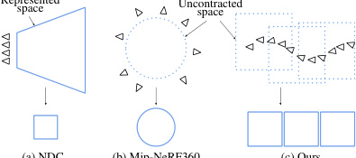
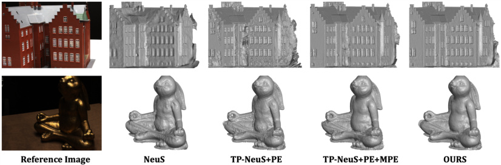
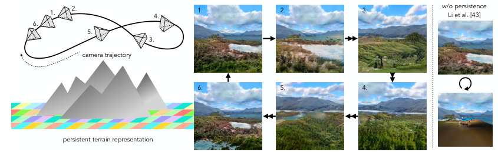
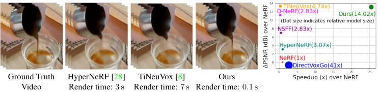
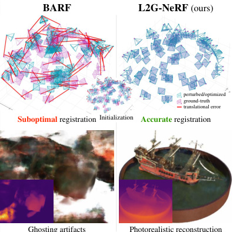
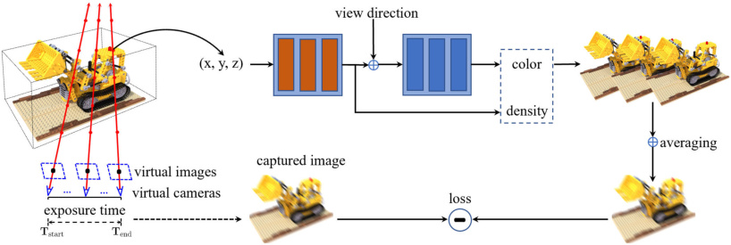
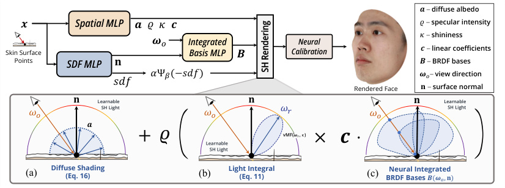
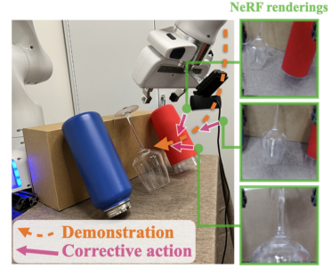
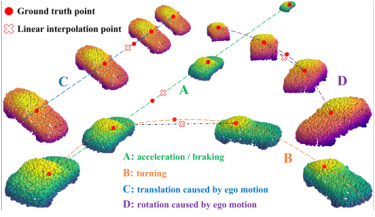

Fundamentals
These papers address more fundamental problems of view-synthesis with NeRF methods.Grid-guided Neural Radiance Fields for Large Urban Scenes
Linning Xu, Yuanbo Xiangli, Sida Peng, Xingang Pan, Nanxuan Zhao, Christian Theobalt, Bo Dai, Dahua Lin
Figure 1. We perform large urban scene rendering with a novel grid-guided neural radiance fields. An
example of our target large urban scene is shown on the left, which spans over 2.7km2 ground areas
captured by over 5k drone images. We show that the rendering results from NeRF-based methods tend to
display noisy artifacts when adapting to large-scale scenes with high-resolution feature grids. Our
proposed two-branch model combines the merits from both approaches and achieves photorealistic novel
view renderings with remarkable improvements over existing methods. Both two branches gain significant
enhancements over their individual baselines. (Project page: https://city-super.github.io/gridnerf)
The authors propose a compact multiresolution ground feature plane representation combined with a
positional encoding-based NeRF branch to handle scenes with complex geometry and texture. This integration
allows for efficient rendering of photorealistic novel views with fine details.
Neural Residual Radiance Fields for Streamably Free-Viewpoint Videos
Liao Wang, Qiang Hu, Qihan He, Ziyu Wang, Jingyi Yu, Tinne Tuytelaars, Lan Xu, Minye Wu
Figure 1. Our proposed ReRF utilizes a residual radiance field and a global MLP to enable highly
compressible and streamable radiance field modeling. Our ReRF-based codec scheme and streaming player
gives users a rich interactive experience.
ReRF extends NeRF to handle long-duration dynamic scenes in real-time by modeling residuals between
adjacent timestamps in a spatial-temporal feature space with a global coordinate-based MLP feature
decoder. The method uses a compact motion grid and employs a sequential training scheme. ReRF enables
online streaming of FVVs of dynamic scenes.
SteerNeRF: Accelerating NeRF Rendering via Smooth Viewpoint Trajectory
Sicheng Li, Hao Li, Yue Wang, Yiyi Liao, Lu Yu
Figure 1. Illustration. We exploit smooth viewpoint trajectory to accelerate NeRF rendering, achieved by
performing volume rendering at a low resolution and recovering the target image guided by multiple
viewpoints. Our method enables fast rendering with a low memory footprint.
NeRF-MVS improves the efficiency of NeRF rendering by keyframe prior knowledge, allowing the information
of earlier rendered images to influence later ones. Moreover, the use of a 2D renderer decreases memory
consumption and overhead.
Compressing Volumetric Radiance Fields to 1 MB
Lingzhi Li, Zhen Shen, Zhongshu Wang, Li Shen, Liefeng Bo
Figure 1. Our compression pipeline realizes 100X compression rate while maintaining the rendering
quality of the original volumetric model.
The VQRF framework compresses volume-grid-based radiance fields to overcome their memory and disk space
issues. The framework includes voxel pruning, a trainable vector quantization, and an efficient joint
tuning strategy, which achieves high generalization with negligible loss of visual quality.
DINER: Disorder-Invariant Implicit Neural Representation
Shaowen Xie, Hao Zhu, Zhen Liu, Qi Zhang, You Zhou, Xun Cao, Zhan Ma
Figure 1. PSNR of various INRs on 2D image fitting over different training epochs.
DINER solves the spectral bias in implicit neural representation by rearranging input coordinates to
enable improved mapping of the signal to a more uniform distribution. The method demonstrated improved
reconstruction quality and speed when compared with other state-of-the-art algorithms.
FreeNeRF: Improving Few-shot Neural Rendering with Free Frequency Regularization
Jiawei Yang, Marco Pavone, Yue Wang
Figure 3. Illustration of occlusion regularization. We show 3 training views (solid rectangles) and 2
novel views (dashed rectangles) rendered by a frequency-regularized NeRF. The floaters in the novel views
appear to be near-camera dense fields in the training views (dashed circles) so that we can penalize them
directly without the need for the costly novel-view rendering in .
FreeNeRF is a simple baseline that surpasses previous state-of-the-art methods in neural view synthesis
performance with sparse inputs. This is achieved by introducing two regularization terms at no additional
computational cost, aimed at controlling frequency range inputs and penalizing near-camera density fields.
The proposed technique presents an effective approach for low-data regimes of neural radiance fields
training.
Learning Neural Duplex Radiance Fields for Real-Time View Synthesis
Ziyu Wan, Christian Richardt, Aljaž Božič, Chao Li, Vijay Rengarajan, Seonghyeon Nam, Xiaoyu Xiang, Tuotuo Li, Bo Zhu, Rakesh Ranjan, Jing Liao
Figure 1. Our framework efficiently learns the neural duplex radiance field from a NeRF model for
high-quality real-time view synthesis.
NeRF to Mesh (N2M) converts Nerf models to mesh for real-time rendering. The representation uses a duplex
mesh and screen-space convolution for fast rendering. Furthermore, a multi-view distillation optimization
strategy is used to improve performance.
Neuralangelo: High-Fidelity Neural Surface Reconstruction
Zhaoshuo Li, Thomas Müller, Alex Evans, Russell H. Taylor, Mathias Unberath, Ming-Yu Liu, Chen-Hsuan Lin
Figure 1. We present Neuralangelo, a framework for high-fidelity 3D surface reconstruction from RGB
images using neural volume rendering, even without auxiliary data such as segmentation or depth. Shown
in the figure is an extracted 3D mesh of a courthouse.
Neuralangelo synthesizes high-quality 3D models from images by first learning a multi-resolution implicit
function representative of a geometry structure, then using a smoothed representation to improve the
optimization of the hash grid.
PermutoSDF: Fast Multi-View Reconstruction with Implicit Surfaces using Permutohedral Lattices
Radu Alexandru Rosu, Sven Behnke
Figure 1. Given multi-view images, we recover both high quality geometry as an implicit SDF and
appearance which can be rendered in real-time.
PermutoSDF proposes a permutohedral lattice implicit surface representation that can recover
high-frequency geometric details on arbitrary mesh at a lower cost than voxel hashing. The underlying
approach uses hybrid density and SDF optimization for high-quality surface reconstruction from RGB images.
Multi-Space Neural Radiance Fields
Ze-Xin Yin, Jiaxiong Qiu, Ming-Ming Cheng, Bo Ren
Figure 1. (a) Though Mip-NeRF 360 can handle unbounded scenes, it still suffers from reflective
surfaces, as the virtual images violate the multi-view consistency, which is of vital importance to
NeRF-based methods. (b) Our method can help conventional NeRF-like methods learn the virtual images with
little extra cost.
MS-NeRF proposes a multi-space approach to address the problem of blurry or distorted renderings caused by
reflective objects in existing NeRF methods. By using feature fields in parallel subspaces, the MS-NeRF
shows better performance with minimal computational overheads needed for training and inferring.
NeRFLight: Fast and Light Neural Radiance Fields using a Shared Feature Grid
Fernando Rivas-Manzaneque, Jorge Sierra-Acosta, Adrian Penate-Sanchez, Francesc Moreno-Noguer, Angela Ribeiro
Figure 1. NeRFLight is able to double the FPS/MB ratio of the second best method while obtaining similar
quality metrics to state-of-the-art.
The authors introduce a lightweight neural radiance field, called SplitNeRF, which separates the density
field into regions. A different decoder is employed to model the density field of each region,
simultaneously using the same feature grid. This new architecture produces a smaller but more compact
representation than existing methods.
Cross-Guided Optimization of Radiance Fields with Multi-View Image Super-Resolution for High-Resolution Novel View Synthesis
Youngho Yoon, Kuk-Jin Yoon
Figure 1. Cross-guided optimization between single image superresolution and radiance fields. They
complement weaknesses of one another with their respective strengths by using the SR update module,
rendered train-view RGBs, and uncertainty maps.
The proposed method uses a cross-guided optimization framework that performs multi-view image
super-resolution (MVSR) on train-view images during the optimization process of radiance fields. This
iterative process improves multi-view consistency and high-frequency details, which ultimately leads to
better performance in high-resolution novel view synthesis. The method outperforms existing methods on
various benchmark datasets.
HelixSurf: A Robust and Efficient Neural Implicit Surface Learning of Indoor Scenes with Iterative Intertwined Regularization
Zhihao Liang, Zhangjin Huang, Changxing Ding, Kui Jia
Figure 2. Overview of HelixSurf: Helix-shaped neural implicit Surface learning. HelixSurf integrates the
neural implicit surface learning (cf. Section 4.1) and PatchMatch based MVS (cf. Section 4.2) in a
robust and efficient manner. We optimize HelixSurf with an iterative intertwined regularization, which
uses the intermediate prediction from one strategy as guidance to regularize the learning/optimization
of the other one; given that MVS predictions are less reliable for textureless surface areas, we
additionally devise a scheme that regularizes the learning on such areas by leveraging the homogeneity
per superpixel in observed multi-view images (cf. Section 4.1.1). We also propose a scheme for point
sampling along rays (cf. Section 4.3), which significantly improves the efficiency. At the inference stage
of HelixSurf, we conduct grid sampling to query the learned SDF values at sampled points and run
Marching Cubes to get the reconstruction results.
HelixSurf is proposed and combines traditional multi-view stereo with neural implicit surface learning for
reconstruction of complex scene surfaces using complementary benefits from the two methods. The authors
show favorable results with orders of magnitude faster computation times, even without relying on
auxiliary training data.
Neural Fourier Filter Bank
Zhijie Wu, Yuhe Jin, Kwang Moo Yi Figure 1. Teaser – We propose neural Fourier filter bank to perform spatial and frequency-wise
decomposition jointly, inspired by wavelets. Our method provides significantly improved reconstruction
quality given the same computation and storage budget, as represented by the PSNR curve and the error
image overlay. Relying only on space partitioning without frequency resolution (InstantNGP) or frequency
encodings without space resolution (SIREN) provides suboptimal performance and convergence. Simply
considering both (ModSine) enhances scalability when applied to larger scenes, but not in terms of
quality and convergence.
Figure 1. Teaser – We propose neural Fourier filter bank to perform spatial and frequency-wise
decomposition jointly, inspired by wavelets. Our method provides significantly improved reconstruction
quality given the same computation and storage budget, as represented by the PSNR curve and the error
image overlay. Relying only on space partitioning without frequency resolution (InstantNGP) or frequency
encodings without space resolution (SIREN) provides suboptimal performance and convergence. Simply
considering both (ModSine) enhances scalability when applied to larger scenes, but not in terms of
quality and convergence.
NFFB is a Fourier decomposition inspired neural field that separates scene signals into spatial and
frequency components. It outperforms other state-of-the-art models using this paradigm in terms of model
compactness and convergence speed across 2D image fitting, 3D shape reconstruction and neural radiance
fields.
Progressively Optimized Local Radiance Fields for Robust View Synthesis
Andreas Meuleman, Yu-Lun Liu, Chen Gao, Jia-Bin Huang, Changil Kim, Min H. Kim, Johannes Kopf

Figure 2. Space parameterization. (a) NDC, used by NeRF for forward-facing scenes, maps a frustum to a
unit cube volume. While a sensible approach for forward-facing cameras, it is only able to represent a
small portion of a scene as the frustum cannot be extended beyond a field of view of 120◦ or so without
significant distortion. (b) Mip-NeRF360’s space contraction squeezes the background and fits the entire
space into a sphere of radius 2. It is designed for inward-facing 360 scenes and cannot scale to long
trajectories. (c) Our approach allocates several radiance fields along the camera trajectory. Each
radiance field maps the entire space to a cube (Equation (5)) and, each having its own center for
contraction (Equatione (7)), the high-resolution uncontracted space follows the camera trajectory and
our approach can adapt to any camera path.
The authors present an algorithm for reconstructing the radiance field of a large-scale scene from a
single casually captured video. To address the size of the scene and difficulty of camera pose estimation,
the method uses local radiance fields trained with frames within a temporal window in a progressive
manner. The method is shown to be more robust than existing approaches and performs well even under
moderate pose drifts.
MobileNeRF: Exploiting the Polygon Rasterization Pipeline for Efficient Neural Field Rendering on Mobile Architectures
Zhiqin Chen, Thomas Funkhouser, Peter Hedman, Andrea Tagliasacchi
Figure 1. Teaser – We present a NeRF that can run on a variety of common devices at interactive frame
rates.
Poly-NeRF introduces a new representation for NeRFs that relies on standard hardware rendering instead of
its traditional algorithms for fast NeRF representation.
TMO: Textured Mesh Acquisition of Objects with a Mobile Device by using Differentiable Rendering
Jaehoon Choi, Dongki Jung, Taejae Lee, Sangwook Kim, Youngdong Jung, Dinesh Manocha, Donghwan Lee
Figure 1. Example reconstruction results collected from a smartphone in the wild. (a) Data acquisition
setup. (b) Images captured from a smartphone. (c) A reconstructed mesh. (d) A novel view of textured
mesh. Our proposed method can reconstruct the highquality geometric mesh with a visually realistic
texture.
The authors propose a pipeline to capture textured meshes using a smartphone by incorporating structure
from motion and neural implicit surface reconstruction. The method allows for high-quality mesh
reconstruction with improved texture synthesis and does not require in-lab environments or accurate masks.
Structural Multiplane Image: Bridging Neural View Synthesis and 3D Reconstruction
Mingfang Zhang, Jinglu Wang, Xiao Li, Yifei Huang, Yoichi Sato, Yan Lu
Figure 1. We propose the Structural Multiplane Image (S-MPI) representation to bridge the tasks of
neural view synthesis and 3D reconstruction. It consists of a set of posed RGBα images with geometries
approximating the 3D scene. The scene-adaptive S-MPI overcomes the critical limitations of standard MPI
, e.g., discretization artifacts (D) and repeated textures (R), and achieves a better depth map compared
with the previous planar reconstruction method, PlaneFormer .
S-MPI extends MPI by using compact and expressive structures. The authors propose a transformer-based
network to predict S-MPI layers, their masks, poses, and RGBA contexts, and handle non-planar regions in a
special case. Experiments show superior performance over MPI-based methods for view synthesis and planar
reconstruction.
Neural Vector Fields for Implicit Surface Representation and Inference
Edoardo Mello Rella, Ajad Chhatkuli, Ender Konukoglu, Luc Van Gool
Figure 1: Vector Field (VF) visualization on 2D surfaces. Each column shows the shape to represent in
black, and a zoomed in sample reconstruction of the surface inside the red box. VF can represent shapes
similar to SDF or binary occupancy, but also open surfaces. As the surface normals are directly encoded,
VF can reconstruct very sharp angles through additional regularization when needed.
This paper introduces a new 3D implicit field representation called Vector Field (VF) that encodes unit
vectors in 3D space. VF is directed at the closest point on the surface, and encodes surface normal
directly, which has superior accuracy in representing any type of shape, outperforming other standard
methods on several datasets including ShapeNet.
Towards Better Gradient Consistency for Neural Signed Distance Functions via Level Set Alignment
Baorui Ma, Junsheng Zhou, Yu-Shen Liu, Zhizhong Han
Figure 2. Visualization of level sets on a cross section. We pursue better gradient consistency in a
field learned from 3D point clouds in (a) and multi-view images in (b). We minimize our level set
alignment loss with NeuralPull in (a) and NeuS in (b), which leads to more accurate SDFs with better
parallelism of level sets and less artifacts in empty space.
The parallelism of level sets is the key factor affecting inference accuracy of neural SDFs. Toward Better
Gradient Consistency for Neural Signed Distance Functions from Point Clouds or Multi-View Images improves
accuracy using an adaptive alignment loss and constraining gradients at queries and their projections.
WIRE: Wavelet Implicit Neural Representations
Vishwanath Saragadam, Daniel LeJeune, Jasper Tan, Guha Balakrishnan, Ashok Veeraraghavan, Richard G. Baraniuk
Figure 1. Wavelet implicit neural representation (WIRE). We propose a new nonlinearity for implicit
neural representations (INRs) based on the continuous complex Gabor wavelet that has high representation
capacity for visual signals. The top row visualizes two commonly used nonlinearities: SIREN with
sinusoidal nonlinearity and Gaussian nonlinearity, and WIRE that uses a continuous complex Gabor
wavelet. WIRE benefits from the frequency compactness of sine, and spatial compactness of a Gaussian
nonlinearity. The bottom row shows error maps for approximating an image with strong edges. SIREN
results in global ringing artifacts while Gaussian nonlinearity leads to compact but large error at
edges. WIRE produces results with the smallest and most spatially compact error. This enables WIRE to
learn representations rapidly and accurately, while being robust to noise and undersampling of data.
WIRE uses complex Gabor wavelets which favorably combine good properties for image processing tasks that
use implicit neural representation such as image denoising, image inpainting, and super-resolution. The
authors argue that WIRE outperforms current state-of-the-art INRs in terms of both accuracy and
robustness.
MixNeRF: Modeling a Ray with Mixture Density for Novel View Synthesis from Sparse Inputs
Seunghyeon Seo, Donghoon Han, Yeonjin Chang, Nojun Kwak
Figure 1. Comparison with the vanilla mip-NeRF and other regularization methods. Given the same number
of training batch and iterations, our MixNeRF outperforms mip-NeRF and DietNeRF by a large margin with
comparable or shorter training time. Compared to RegNeRF , ours achieves superior performance with about
42% shortened training time. The size of the circles are proportional to the number of input views,
indicating 3/6/9-view, respectively. More details are provided in Sec. 4.2.
MixNeRF improves the training efficiency of novel-view synthesis by modeling a ray with a mixture density
model. The method also introduces a new task of ray depth estimation as a training objective and
regenerates blending weights to improve robustness.
Looking Through the Glass: Neural Surface Reconstruction Against High Specular Reflections
Jiaxiong Qiu, Peng-Tao Jiang, Yifan Zhu, Ze-Xin Yin, Ming-Ming Cheng, Bo Ren
Figure 1. 3D object surface reconstruction under high specular reflections (HSR). Top: A real-world scene
captured by a mobile phone. Middle: The state-of-the-art method NeuS fails to reconstruct the target
object (i.e., the Buddha). Bottom: We propose NeuS-HSR, which recovers a more accurate target object
surface than NeuS.
While implicit neural rendering provides high-quality 3D object surfaces, high specular reflections in
scenes through glass cause ambiguities that challenge their reconstruction. NeuS-HSR combats this
challenge by decomposing the rendered image into two appearances: the object and auxiliary plane. The
auxiliary plane appearance is generated by a novel auxiliary plane module that integrates physics
assumptions with neural networks.
NeuralUDF: Learning Unsigned Distance Fields for Multi-view Reconstruction of Surfaces with Arbitrary Topologies
Xiaoxiao Long, Cheng Lin, Lingjie Liu, Yuan Liu, Peng Wang, Christian Theobalt, Taku Komura, Wenping Wang
Figure 1. We show three groups of multi-view reconstruction results generated by our proposed NeuralUDF
and NeuS respectively. Our method is able to faithfully reconstruct the highquality geometries for both
the closed and open surfaces, while NeuS can only model shapes as closed surfaces, thus leading to
inconsistent typologies and erroneous geometries.
NeuralUDF proposes utilizing an unsigned distance function representation for surfaces as opposed to a
signed distance function representation. A volume rendering scheme is introduced to learn the neural UDF
representation, allowing for high-quality reconstruction of non-closed shapes with complex topologies.
Sphere-Guided Training of Neural Implicit Surfaces
Andreea Dogaru, Andrei Timotei Ardelean, Savva Ignatyev, Egor Zakharov, Evgeny Burnaev
Figure 1. We propose a new hybrid approach for learning neural implicit surfaces from multi-view images.
In previous methods, the volumetric ray marching training procedure is applied for the whole bounding
sphere of the scene (middle left). Instead, we train a coarse sphere-based surface reconstruction
(middle right) alongside the neural surface to guide the ray sampling and ray marching. As a result, our
method achieves an increased sampling efficiency by pruning empty scene space and better quality of
reconstructions (right).
SphereGuided is a method that makes use of a coarse sphere-based surface representation to increase
efficiency of ray marching in neural distance functions. The sphere-based representation is trained in
joint fashion with the Neural Distance Function. The joint representation leads to improved accuracy for
high-frequency details without requiring additional forward passes.
VDN-NeRF: Resolving Shape-Radiance Ambiguity via View-Dependence Normalization
Bingfan Zhu, Yanchao Yang, Xulong Wang, Youyi Zheng, Leonidas Guibas
Figure 2. (a): When the geometry is correct, observations (the projections on the 2D image plane
represented by squares) of the same surface point from different viewpoints are similar; (b): When the
geometry is incorrect, i.e., a cube is reconstructed as a sphere, the radiance of a surface point (dot
on the sphere) can exhibit large directional view-dependence. However, as long as the viewdependent
radiance function has enough capacity (c in Eq. (1)), volume rendering of the wrong geometry can still
achieve small photometric reconstruction error. Thus, one should constrain the view-dependent capacity
of the radiance function to avoid overfitting; (c): On the other hand, when the surface is non-Lambertian
or the light field is unstable, one should not over-constrain the viewdependent capacity; otherwise, the
geometry may be traded for photometric reconstruction quality.
VDN-NeRF is an approach that normalizes the view-dependence of Neural Radiance Fields without explicitly
modeling the underlying factors. The method distills invariant information already present in the learned
NeRFs and applies it during joint training for view synthesis. This method improves geometry for
non-Lambertian surfaces and dynamic lighting without changing the volume rendering pipeline.
NeAT: Learning Neural Implicit Surfaces with Arbitrary Topologies from Multi-view Images
Xiaoxu Meng, Weikai Chen, Bo Yang
Figure 1. We show three groups of surface reconstruction from multi-view images. The front and back
faces are rendered in blue and yellow respectively. Our method (left) is able to reconstruct
high-fidelity and intricate surfaces of arbitrary topologies, including those non-watertight structures,
e.g. the thin single-layer shoulder strap of the top (middle). In comparison, the state-of-the-art NeuS
method (right) can only generate watertight surfaces, resulting in thick, double-layer geometries.
NeAT proposes learning arbitrary surface topologies from multi-view images in a neural rendering
framework. The signed distance function is used to represent the 3D surface with a branch that estimates
surface existence probability. NeAT also includes neural volume rendering and performs well in
reconstructing both watertight and non-watertight surfaces.
SurfelNeRF: Neural Surfel Radiance Fields for Online Photorealistic Reconstruction of Indoor Scenes
Yiming Gao, Yan-Pei Cao, Ying Shan
Figure 1. Examples to illustrate the task of online photorealistic reconstruction of an indoor scene.
The online photorealistic reconstruction of large-scale indoor scenes: given an online input image
stream of a previously unseen scene, the goal is to progressively build and update a scene
representation that allows for highquality rendering from novel views.
SurfelNeRF combines a neural radiance field with a surfel-based representation to achieve efficient online
reconstruction and high-quality rendering of large-scale indoor scenes. The method employs a flexible
neural network to store geometric attributes and extracted appearance features from input images. Results
show that SurfelNeRF outperforms state-of-the-art methods in both feedforward inference and per-scene
optimization settings.
ShadowNeuS: Neural SDF Reconstruction by Shadow Ray Supervision
Jingwang Ling, Zhibo Wang, Feng Xu
Figure 1. Our method can reconstruct neural scenes from singleview images captured under multiple
lightings by effectively leveraging a novel shadow ray supervision scheme.
ShadowNeuS introduces shadow ray supervision to NeRF and shows improvements in single-view shape
reconstruction from binary shadow as well as RGB images. The code and data are available at
'https://github.com/gerwang/ShadowNeuS'.
Nerflets: Local Radiance Fields for Efficient Structure-Aware 3D Scene Representation from 2D Supervision
Xiaoshuai Zhang, Abhijit Kundu, Thomas Funkhouser, Leonidas Guibas, Hao Su, Kyle Genova
Figure 1. We propose to represent the scene with a set of local neural radiance fields, named nerflets,
which are trained with only 2D supervision. Our representation is not only useful for 2D tasks such as
novel view synthesis and panoptic segmentation, but also capable of solving 3D-oriented tasks such as 3D
segmentation and scene editing. The key idea is our learned structured decomposition (top right).
Nerflets are a newly proposed set of local neural radiance fields that perform efficient and
structure-aware 3D scene representation from images. Each nerflet contributes to panoptic, density, and
radiance reconstruction, optimized jointly to represent decomposed instances of the scene. Nerflets enable
the extraction of panoptic and photometric renderings from any view and enable tasks such as 3D panoptic
segmentation and interactive editing.
Regularize implicit neural representation by itself
Zhemin Li, Hongxia Wang, Deyu Meng
Figure 1. Overview of proposed improve scheme for INR. (a) INR is a fully connected neural network which
maps from coordinate to pixel value. (b) INRR is a regularization term represented by an INR which can
capture the self-similarity. (c) INR-Z improve the performance of INR by combining the neighbor pixels
with coordinate together as the input of another INR.
INRR uses a learned Dirichlet Energy regularizer to improve the generalization ability of Implicit Neural
Representations (INR), particularly for non-uniformly sampled data. Its effectiveness is demonstrated
through numerical experiments and it can also improve other signal representation methods.
RobustNeRF: Ignoring Distractors with Robust Losses
Sara Sabour, Suhani Vora, Daniel Duckworth, Ivan Krasin, David J. Fleet, Andrea Tagliasacchi
Figure 1. NeRF assumes photometric consistency in the observed images of a scene. Violations of this
assumption, as with the images in the top row, yield reconstructed scenes with inconsistent content in
the form of “floaters” (highlighted with ellipses). We introduce a simple technique that produces clean
reconstruction by automatically ignoring distractors without explicit supervision.
Robust NeRF proposes a solution for removing distractors (moving objects, lighting variations, shadows)
from static NeRF scenes during training. The method models the distractors as optimization outliers and
improves NeRF performance on synthetic and real-world datasets.
Multi-View Reconstruction using Signed Ray Distance Functions (SRDF)
Pierre Zins, Yuanlu Xu, Edmond Boyer, Stefanie Wuhrer, Tony Tung
Figure 1. Reconstructions with various methods using 14 images of a model from BlendedMVS .
The authors propose a new optimization framework that combines volumetric integration with local depth
prediction in multi-view 3D shape reconstructions. Their approach demonstrates better geometry estimations
over existing methods, achieving pixel-accuracy while retaining the benefits of volumetric integration.
Self-supervised Super-plane for Neural 3D Reconstruction
Botao Ye, Sifei Liu, Xueting Li, Ming-Hsuan Yang
Figure 1. Reconstruction and Plane Segmentation Results. Our method can reconstruct smooth and complete
planar regions by employing the super-plane constraint and further obtain plane segmentation in an
unsupervised manner.
S3PRecon introduces a self-supervised super-plane constraint for neural implicit surface representation
methods. The method improves the reconstruction of texture-less planar regions in indoor scenes without
requiring any other ground truth annotations. The use of super-planes proves to be more effective than
traditional annotated planes.
PET-NeuS: Positional Encoding Tri-Planes for Neural Surfaces
Yiqun Wang, Ivan Skorokhodov, Peter Wonka

Figure 1. The challenge of using the tri-plane representation directly. First column: reference image.
Second to the fifth column: NeuS, Learning SDF using tri-planes, OURS without self-attention convolution,
and OURS.
PET-NeuS extends NeuS with positional encoding, learnable convolution, and tri-planes as a mixture of MLP
and tri-planes. These improvements achieve high-fidelity reconstruction on standard datasets.
RefSR-NeRF: Towards High Fidelity and Super Resolution View Synthesis
Xudong Huang, Wei Li, Jie Hu, Hanting Chen, Yunhe Wang
Figure 2. An overview of the reference-based SR model, which consists of a two-branch backbone and a
fusion module. The backbones extract the feature maps from degradation-dominant (LRRef and novel view
LR) and detail-dominant information (HR Ref and novel view LR) respectively. The two feature maps are
then fused and further refined by a fusion module.
RefSR-NeRF is an end-to-end framework that reconstructs high frequency details of NeRF rendering that are
lost due to resolution explosion, by first generating a low-resolution NeRF model and then using a
high-resolution reference image to reconstruct the high frequency details. The proposed RefSR model learns
the inverse degradation process from NeRF to the target high-resolution image and outperforms NeRF and its
variants in terms of speed, memory usage, and rendering quality.
DynIBaR: Neural Dynamic Image-Based Rendering
Zhengqi Li, Qianqian Wang, Forrester Cole, Richard Tucker, Noah Snavely
Figure 1. Recent methods for synthesizing novel views from monocular videos of dynamic scenes–like
HyperNeRF – struggle to render high-quality views from long videos featuring complex camera and scene
motion. We present a new approach that addresses these limitations, illustrated above via an application
to 6DoF video stabilization, where we apply our approach and prior methods on a 30-second, shaky video
clip, and compare novel views rendered along a smoothed camera path (left). On a dynamic scenes dataset
(right) , our approach significantly improves rendering fidelity, as indicated by synthesized images and
LPIPS errors computed on pixels corresponding to moving objects (yellow numbers). Please see the
supplementary video for full results.
DynIBAR synthesizes novel views from a video with a volumetric image-based rendering approach, which
synthesizes new viewpoints by aggregating features from nearby views in a scene-motion-aware manner. The
method allows for photo-realistic novel view synthesis from long videos featuring complex scene dynamics.
F2-NeRF: Fast Neural Radiance Field Training with Free Camera Trajectories
Peng Wang, Yuan Liu, Zhaoxi Chen, Lingjie Liu, Ziwei Liu, Taku Komura, Christian Theobalt, Wenping Wang
Figure 1. Top: (a) Forward-facing camera trajectory. (b) 360◦
F^2-NeRF is introduced as a novel fast and free grid-based NeRF for novel view synthesis, called
Fast-Free-NeRF. F^2-NeRF proposes a new perspective warping approach that enables handling of arbitrary
camera trajectories to handle both bounded and unbounded scenes. The proposed method is fast and can still
obtain high performance with a few minutes of training.
NeuDA: Neural Deformable Anchor for High-Fidelity Implicit Surface Reconstruction
Bowen Cai, Jinchi Huang, Rongfei Jia, Chengfei Lv, Huan Fu
Figure 1. We show the surface reconstruction results produced by NeuDA and the two baseline methods,
including NeuS and Intsnt-NeuS . Intsnt-NeuS is the reproduced NeuS leveraging the multi-resolution hash
encoding technique . We can see NeuDA can promisingly preserve more surface details. Please refer to
Figure 5 for more qualitative comparisons.
NeuDA utilizes hierarchical anchor grids to improve surface reconstruction. These anchor grids encode both
high- and low-frequency geometry and appearance with a simple hierarchical positional encoding method. The
model shows substantial improvement on reconstruction over prior work.
PlenVDB: Memory Efficient VDB-Based Radiance Fields for Fast Training and Rendering
Han Yan, Celong Liu, Chao Ma, Xing Mei
Figure 1. We propose PlenVDB, a sparse volume data structure for accelerating NeRF training and
rendering. Given a set of training views, our method directly optimizes a VDB model. Then a novel view
can be rendered with the model. Two advantages, i.e., fast voxel access for faster speed, and efficient
storage for smaller model size, enable efficient NeRF rendering on mobile devices.
PlenVDB accelerates training and inference in neural radiance fields by using the VDB data structure.
PlenVDB is shown to be more efficient in training, data representation, and rendering than previous
methods and can achieve high FPS on mobile devices.
SeaThru-NeRF: Neural Radiance Fields in Scattering Media
Deborah Levy, Amit Peleg, Naama Pearl, Dan Rosenbaum, Derya Akkaynak, Simon Korman, Tali Treibitz Figure 1. NeRFs have not yet tackled scenes in which the medium strongly influences the appearances of
objects, as in the case of underwater imagery. By incorporating a scattering image formation model into
the NeRF rendering equations, we are able to separate the scene into ‘clean’ and backscatter components.
Consequently, we can render photorealistic novel-views with or without the participating medium, in the
latter case recovering colors as if the image was taken in clear air. Results on the Curac¸ao scene: A
RAW image (left) is brightened and white balanced (WB) for visualization, showing more detail, while
areas further from the camera (top-right corner) are occluded and attenuated by severe backscatter which
is effectively removed in our restored image. Please zoom-in to observe the details.
Figure 1. NeRFs have not yet tackled scenes in which the medium strongly influences the appearances of
objects, as in the case of underwater imagery. By incorporating a scattering image formation model into
the NeRF rendering equations, we are able to separate the scene into ‘clean’ and backscatter components.
Consequently, we can render photorealistic novel-views with or without the participating medium, in the
latter case recovering colors as if the image was taken in clear air. Results on the Curac¸ao scene: A
RAW image (left) is brightened and white balanced (WB) for visualization, showing more detail, while
areas further from the camera (top-right corner) are occluded and attenuated by severe backscatter which
is effectively removed in our restored image. Please zoom-in to observe the details.
The authors introduce SeaThru-NeRF for rendering scenes in scattering media such as underwater or foggy
scenes. The X-NeRF architecture also allows for the medium's parameters to be learnt from data along with
the scene.
DINER: Depth-aware Image-based NEural Radiance fields
Malte Prinzler, Otmar Hilliges, Justus Thies Figure 1. Based on sparse input views, we predict depth and feature maps to infer a volumetric scene
representation in terms of a radiance field which enables novel viewpoint synthesis. The depth
information allows us to use input views with high relative distance such that the scene can be captured
more completely and with higher synthesis quality compared to previous state-of-the-art methods.
Figure 1. Based on sparse input views, we predict depth and feature maps to infer a volumetric scene
representation in terms of a radiance field which enables novel viewpoint synthesis. The depth
information allows us to use input views with high relative distance such that the scene can be captured
more completely and with higher synthesis quality compared to previous state-of-the-art methods.
DINER uses depth and feature maps to guide volumetric scene representation for 3D rendering of novel
views. The method incorporates depth information in feature fusion and uses efficient scene sampling,
resulting in higher synthesis quality even for input views with high disparity.
Masked Wavelet Representation for Compact Neural Radiance Fields
Daniel Rho, Byeonghyeon Lee, Seungtae Nam, Joo Chan Lee, Jong Hwan Ko, Eunbyung Park
Figure 1. Rate-distortion curves on the NeRF synthetic dataset. The numbers inside parenthesis denote
the axis resolution of grids.
The authors propose a new method for representing wavelet-transformed grid-based neural fields in a more
memory-efficient way. They achieved state-of-the-art compression results while still maintaining
high-quality reconstruction.
Exact-NeRF: An Exploration of a Precise Volumetric Parameterization for Neural Radiance Fields
Brian K. S. Isaac-Medina, Chris G. Willcocks, Toby P. Breckon
Figure 1. Comparison of Exact-NeRF (ours) with mip-NeRF 360 . Our method is able to both match the
performance and obtain superior depth estimation over a larger depth of field.
Exact-NeRF improves mip-NeRF, which approximates the Integrated Positional Encoding (IPE) using an
expected value of a multivariate Gaussian. Exact-NeRF instead uses a pyramid-based integral formulation to
calculate the IPE exactly, leading to improved accuracy and a natural extension in the case of unbounded
scenes.
NeRFLiX: High-Quality Neural View Synthesis by Learning a Degradation-Driven Inter-viewpoint MiXer
Kun Zhou, Wenbo Li, Yi Wang, Tao Hu, Nianjuan Jiang, Xiaoguang Han, Jiangbo Lu
Figure 1. We propose NeRFLiX, a general NeRF-agnostic restorer that is capable of improving neural view
synthesis quality. The first example is from Tanks and Temples , and the last one is a user scene
captured by a mobile phone. RegNeRF-V3 means the model trained with three input views.
NeRFLiX restores realistic details in synthesized images by leveraging aggregation: it can effectively
remove artifacts with a degradation-driven mixer of large-scale NeRF training data. Beyond the artifact
removal, the proposed inter-viewpoint aggregation framework improves the performance and photorealism of
existing NeRF models.
NeUDF: Leaning Neural Unsigned Distance Fields with Volume Rendering
Yu-Tao Liu, Li Wang, Jie yang, Weikai Chen, Xiaoxu Meng, Bo Yang, Lin Gao
Figure 1. We show comparisons of the input multi-view images (top), watertight surfaces (middle)
reconstructed with state-of-the-art SDF-based volume rendering method NeuS , and open surfaces (bottom)
reconstructed with our method. Our method is capable of reconstructing high-fidelity shapes with both
open and closed surfaces from multi-view images.
NeUDF is an implicit neural surface representation that uses the unsigned distance function to enable the
reconstruction of arbitrary surfaces from multiple views. It addresses issues arising due to the volume of
the sigmoid function and the surface orientation ambiguity in open surfaces rendering.
TINC: Tree-structured Implicit Neural Compression
Runzhao Yang, Tingxiong Xiao, Yuxiao Cheng, Jinli Suo, Qionghai Dai
Figure 1. The scheme of the proposed approach TINC. For a target data, we divide the volume into
equal-size blocks via octree partitioning, with some neighboring and far-apart blocks of similar
appearances. Then each block can be representation with an implicit neural function, implemented as an
MLP. After sharing parameters among similar blocks, we can achieve a more compact neural network with a
tree shaped structure. Here we highlight the similar blocks sharing network parameters with the same
color.
TINC is a new compression technique for implicit neural representation (INR) that uses a tree-structured
MLP to fit local regions and extract shared features. This approach improves the compression of INR and
outperforms competing methods.
ABLE-NeRF: Attention-Based Rendering with Learnable Embeddings for Neural Radiance Field
Zhe Jun Tang, Tat-Jen Cham, Haiyu Zhao
Figure 1. We illustrate two views of the Blender ’Drums’ Scene. The surface of the drums exhibit either
a translucent surface or a reflective surface at different angles. As shown, Ref-NeRF model has severe
difficulties interpolating between the translucent and reflective surfaces as the viewing angle changes.
Our method demonstrates its superiority over NeRF rendering models by producing such accurate
view-dependent effects. In addition, the specularity of the cymbals are rendered much closer to ground
truth compared to Ref-NeRF.
ABLE-NeRF is a self-attention-based alternative to traditional volume rendering. It utilizes learnable
embeddings to better represent view-dependent effects, resulting in superior rendering of glossy and
translucent surfaces compared to prior work. ABLE-NeRF outperforms Ref-NeRF on all 3 image quality metrics
in the Blender dataset.
Hybrid Neural Rendering for Large-Scale Scenes with Motion Blur
Peng Dai, Yinda Zhang, Xin Yu, Xiaoyang Lyu, Xiaojuan Qi
Figure 1. Our hybrid neural rendering model generates highfidelity novel view images. Please note
characters in the book where the result of Point-Nerf is blurry and the GT is contaminated by blur
artifacts.
The hybrid rendering model proposed integrates image-based and neural 3D representations to jointly
produce view-consistent novel views of large-scale scenes, handling naturally-occurring artifacts such as
motion blur. The authors also propose to simulate blur effects on rendered images with quality-aware
weights, leading to better results for novel view synthesis than competing point-based methods.
Seeing Through the Glass: Neural 3D Reconstruction of Object Inside a Transparent Container
Jinguang Tong, Sundaram Muthu, Fahira Afzal Maken, Chuong Nguyen, Hongdong Li
Figure 2. An overview of the ReNeuS framework. The scene is separated into two sub-spaces w.r.t. the
interface. The internal scene is represented by two multi-layer perceptrons (MLPs) for both geometry and
appearance. For neural rendering, we recursively trace a ray through the scene and collect a list of
sub-rays. Our neural implicit representation makes the tracing process controllable. We show a ray
tracing process with the depth of recursion Dre = 3 here. Color accumulation is conducted on irradiance
of the sub-rays in the inverse direction of ray tracing. We optimized the network by the difference
between rendered image and the ground truth image. Target mesh can be extracted from SDF by Marching
Cubes
ReNeuS proposes a neural rendering approach for reconstructing the 3D geometry of an object confined in a
transparent enclosure. The method models the scene as two subspaces, one inside the transparent enclosure
and another outside it. ReNeuS also presents a hybrid rendering strategy for complex light interactions
and combines volume rendering with ray tracing.
Real-Time Neural Light Field on Mobile Devices
Junli Cao, Huan Wang, Pavlo Chemerys, Vladislav Shakhrai, Ju Hu, Yun Fu, Denys Makoviichuk, Sergey Tulyakov, Jian Ren
Figure 1. Examples of deploying our approach on mobile devices for real-time interaction with users. Due
to the small model size (8.3MB) and fast inference speed (18 ∼ 26ms per image on iPhone 13), we can
build neural rendering applications where users interact with 3D objects on their devices, enabling
various applications such as virtual try-on. We use publicly available software to make the on-device
application for visualization .
The authors introduce a lightweight and mobile-friendly architecture for real-time neural rendering with
NeLF techniques. The proposed network achieves high quality results while being small and efficient,
outperforming MobileNeRF in terms of speed and storage needs.
Priors and Generative
Priors can either aid in the reconstruction or can be used in a generative manner. For example, in the reconstruction, priors either increase the quality of neural view synthesis or enable reconstructions from sparse image collections.Learning 3D-aware Image Synthesis with Unknown Pose Distribution
Zifan Shi, Yujun Shen, Yinghao Xu, Sida Peng, Yiyi Liao, Sheng Guo, Qifeng Chen, Dit-Yan Yeung
Figure 2. Framework of PoF3D, which consists of a pose-free generator and a pose-aware discriminator.
The pose-free generator maps a latent code to a neural radiance field as well as a camera pose, followed
by a volume renderer (VR) to output the final image. The pose-aware discriminator first predicts a
camera pose from the given image and then use it as the pseudo label for conditional real/fake
discrimination, indicated by the orange arrow.
PoF3D is a generative model for 3D image synthesis that needs no prior on the 3D object pose. It first
infers the pose from the latent code using an efficient pose learner. Then, it trains the discriminator to
differentiate between synthesized images with the predicted pose as a condition and real images. Jointly
trained in an adversarial manner, PoF3D generates high-quality 3D-aware image synthesis.
Painting 3D Nature in 2D: View Synthesis of Natural Scenes from a Single Semantic Mask
Shangzhan Zhang, Sida Peng, Tianrun Chen, Linzhan Mou, Haotong Lin, Kaicheng Yu, Yiyi Liao, Xiaowei Zhou
Figure 1. Given only a single semantic map as input (first row), our approach optimizes neural fields for
view synthesis of natural scenes. Photorealistic images can be rendered via neural fields (the last two
rows).
The paper presents a method for synthesizing multi-view consistent color images of natural scenes from
single semantic masks, using a semantic field as the intermediate representation. The method outperforms
baseline methods and produces photorealistic, multi-view consistent videos without requiring multi-view
supervision or category-level priors.
Shape, Pose, and Appearance from a Single Image via Bootstrapped Radiance Field Inversion
Dario Pavllo, David Joseph Tan, Marie-Julie Rakotosaona, Federico Tombari
Figure 1. Given a collection of 2D images representing a specific category (e.g. cars), we learn a model
that can fully recover shape, pose, and appearance from a single image, without leveraging multiple
views during training. The 3D shape is parameterized as a signed distance function (SDF), which
facilitates its transformation to a triangle mesh for further downstream applications.
An end-to-end hybrid inversion NeRF is introduced to recover 3D shape, pose, and appearance from a single
image. Unlike prior art which made use of multiple views during training, the new approach is capable of
recovering the geometry, pose, and appearance of an object with a single image, and demonstrates
state-of-the-art results on multiple real and artificial rendering tasks.
Local Implicit Ray Function for Generalizable Radiance Field Representation
Xin Huang, Qi Zhang, Ying Feng, Xiaoyu Li, Xuan Wang, Qing Wang Figure 1. We propose LIRF to reconstruct radiance fields of unseen scenes for novel view synthesis.
Given that current generalizable NeRF-like methods cast an infinitesimal ray to render a pixel at
different scales, it causes excessive blurring and aliasing. Our method instead reasons about 3D conical
frustums defined by the neighbor rays through the neighbor pixels (as shown in (a)). Our LIRF outputs
the feature of any sample within the conical frustum in a continuous manner (as shown in (b)), which
supports NeRF reconstruction at arbitrary scales. Compared with the previous method, our method can be
generalized to represent the same unseen scene at multiple levels of details (as shown in (c)).
Specifically, given a set of input views at a consistent image scale ×1, LIRF enables our method to both
preserve sharp details in close-up shots (anti-blurring as shown in ×2 and ×4 results) and correctly
render the zoomed-out images (anti-aliasing as shown in ×0.5 results).
Figure 1. We propose LIRF to reconstruct radiance fields of unseen scenes for novel view synthesis.
Given that current generalizable NeRF-like methods cast an infinitesimal ray to render a pixel at
different scales, it causes excessive blurring and aliasing. Our method instead reasons about 3D conical
frustums defined by the neighbor rays through the neighbor pixels (as shown in (a)). Our LIRF outputs
the feature of any sample within the conical frustum in a continuous manner (as shown in (b)), which
supports NeRF reconstruction at arbitrary scales. Compared with the previous method, our method can be
generalized to represent the same unseen scene at multiple levels of details (as shown in (c)).
Specifically, given a set of input views at a consistent image scale ×1, LIRF enables our method to both
preserve sharp details in close-up shots (anti-blurring as shown in ×2 and ×4 results) and correctly
render the zoomed-out images (anti-aliasing as shown in ×0.5 results).
LIRF is a generalizable neural rendering approach for novel view rendering that aggregates information
from conical frustums to construct a ray. The method outperforms state-of-the-art methods on novel view
rendering of unseen scenes at arbitrary scales.
Multiview Compressive Coding for 3D Reconstruction
Chao-Yuan Wu, Justin Johnson, Jitendra Malik, Christoph Feichtenhofer, Georgia Gkioxari
Figure 1. Multiview Compressive Coding (MCC). (a): MCC encodes an input RGB-D image and uses an
attention-based model to predict the occupancy and color of query points to form the final 3D
reconstruction. (b): MCC generalizes to novel objects captured with iPhones (left) or imagined by DALL·E
2 (middle). It is also general – it works not only on objects but also scenes (right).
MCC is a framework for single-view 3D reconstruction that can learn representations from 3D points of
objects or scenes. Through large-scale training from RGB-D videos, generalization is improved.
Generalizable Implicit Neural Representations via Instance Pattern Composers
Chiheon Kim, Doyup Lee, Saehoon Kim, Minsu Cho, Wook-Shin Han
Figure 1. The reconstructed images of 178×178 ImageNette by TransINR (left) and our generalizable INRs
(right).
The authors propose a generalizable implicit neural representation that can represent complex data
instances by modulating a small set of weights in early MLP layers as an instance pattern composer. The
remaining weights learn composition rules for common representation across instances. The method's
flexibility is shown by testing it on audio, image, and 3D data.
DP-NeRF: Deblurred Neural Radiance Field with Physical Scene Priors
Dogyoon Lee, Minhyeok Lee, Chajin Shin, Sangyoun Lee
Figure 2. Overall pipeline for DP-NeRF. DP-NeRF consists of three stages. (a) The rigid blurring kernel
(RBK) constructs the blurring system using the SE(3) Field based on the physical priors. (b) The
adaptive weight proposal (AWP) refines the composition weights using the depth feature (ζp i,j) of the
samples on the ray of the target pixel (p), the scene (s) information, and the rigidly transformed ray
directions (rp s;0,...,k). (c) Finally the coarse and fine blurred colors, ˆBp and ˜Bp, are composited
using the weighted sum of the ray transformed colors. Lc and Lf denote the coarse and fine RGB
reconstruction loss, respectively.
DP-NeRF is an adaptation of the NeRF model to handle blurred images with physical priors, providing better
geometric and appearance consistency. Specifically, it introduces a rigid blurring kernel and adaptive
weight proposal to refine the color composition error while taking into consideration the relationship
between depth and blur.
DIFu: Depth-Guided Implicit Function for Clothed Human Reconstruction
Dae-Young Song, HeeKyung Lee, Jeongil Seo, Donghyeon Cho
Figure 2. An Overview of our method. (a) First, the hallucinator generates a back-side image IB using IF
. The depth estimator receives IF and IB and estimates a front depth map DF and a back depth map DB
simultaneously. (b) With IF , IB, DF , and DB, the 2D encoder extracts a feature map to be transformed
into the pixel-aligned feature. Meanwhile, DF and DB are projected to form a depth volume V . A 3D
feature map is extracted by the 3D encoder from V , and aligned to the voxel-aligned feature. Both
aligned features are concatenated in the channel axis and used by MLPs to estimate the final occupancy
vector for given query points.
DIFu is an IF-based method for reconstructing clothed human from a single image. It proposes new encoders
and networks to extract features from both 2D and 3D space, utilizing a depth prior to generate a 3D
representation of a human body in addition to an RGB image. The method also estimates colors of 3D points
using a texture inference branch.
HumanGen: Generating Human Radiance Fields with Explicit Priors
Suyi Jiang, Haoran Jiang, Ziyu Wang, Haimin Luo, Wenzheng Chen, Lan Xu
Figure 1. The proposed HumanGen can generate 3D humans with fine-detailed geometry and appearance while
seamlessly lifting various 2D latent editing tools into 3D.
HumanGen presents a 3D human generation scheme with detailed geometry and $\text{360}^{\circ}$ realistic
free-view rendering. It marries the 3D human generation with priors from 2D generators and 3D
reconstructors through an "anchor image" to disentangle the generation of geometry and appearance and
enhance appearance generation. The effectiveness of the proposed method is demonstrated in extensive
experiments for state-of-the-art 3D human generation.
RenderDiffusion: Image Diffusion for 3D Reconstruction, Inpainting and Generation
Titas Anciukevicius, Zexiang Xu, Matthew Fisher, Paul Henderson, Hakan Bilen, Niloy J. Mitra, Paul Guerrero
Figure 1. We propose a 3D-aware image diffusion model that can be used for monocular 3D reconstruction,
3D-aware inpainting, and unconditional generation, while being trained with only monocular 2D
supervision. Here we show results on ShapeNet and FFHQ.
RenderDiffusion is presented in this paper as the first Diffusion Model for 3D generation from 2D input. A
novel image denoising technique is presented, providing a 3D consistent representation that can be
rendered from any viewpoint. Performance was shown on several datasets for 3D scene inference and
generation, as well as 2D inpainting for editing 3D scenes.
Score Jacobian Chaining: Lifting Pretrained 2D Diffusion Models for 3D Generation
Haochen Wang, Xiaodan Du, Jiahao Li, Raymond A. Yeh, Greg Shakhnarovich
Figure 1. Results for text-driven 3D generation using Score Jacobian Chaining with Stable Diffusion as
the pretrained model.
The paper proposes a novel method to extend 2D models trained on an image generation task to a 3D
voxel-based rendering setup. The method uses a diffusion model to learn gradients, which are
backpropagated through the Jacobian of a differentiable renderer to aggregate 2D scores at multiple camera
viewpoints into a 3D score, allowing 2D models to be repurposed for 3D data generation. A novel estimation
mechanism is proposed to address the issue of distribution mismatch in this application.
3D-Aware Multi-Class Image-to-Image Translation with NeRFs
Senmao Li, Joost van de Weijer, Yaxing Wang, Fahad Shahbaz Khan, Meiqin Liu, Jian Yang
Figure 1. 3D-aware I2I translation: given a view-consistent 3D scene (the input), our method maps it
into a high-quality target-specific image. Our approach produces consistent results across viewpoints.
The paper proposes a novel 3D-aware framework for 3D-consistent multi-class image-to-image translation.
The approach employs a multi-class 3D-aware GAN architecture followed by a 3D-aware I2I translation
system, showing improved results over naive 2D-I2I methods for multi-class I2I translation.
Latent-NeRF for Shape-Guided Generation of 3D Shapes and Textures
Gal Metzer, Elad Richardson, Or Patashnik, Raja Giryes, Daniel Cohen-Or
Figure 1. Our three text-guided models: a purely text-guided Latent-NeRF, Latent-NeRF with Sketch-Shape
guidance for more exact control over the generated shape, and Latent-Paint for texture generation for
explicit shapes. The top row represents the models’ inputs.
Latent-NeRF combines text-guided image generation with a latent space diffusion model to introduces a
sketch-based guiding mechanism to generate 3D objects. The authors show its applicability to text-to-3D
and apply latent score distillation to 3D meshes for texture synthesis.
ContraNeRF: Generalizable Neural Radiance Fields for Synthetic-to-real Novel View Synthesis via Contrastive Learning
Hao Yang, Lanqing Hong, Aoxue Li, Tianyang Hu, Zhenguo Li, Gim Hee Lee, Liwei Wang
Figure 3. Pipeline of our ContraNeRF. 1) We first use a shared CNN to extract features for input source
views. Then for each source view, we query features from other source views and aggregate them to get
the geometrically enhanced feature maps (Sec.4.1). 2) For each pair of source views, we compute the
contrastive loss using our GeoContrast (Sec.4.2). Specifically, for the pixel in the i-th source view,
we project it to the j-th source view and sample a collection of projections to get positive and
negative samples. Then the weighted contrastive loss is calculated by considering the distance between
the positive sample and the negative samples. 3) Finally, for each ray in the target view, we compute
colors and densities for a set of samples along the ray by aggregating local features from source views,
and accumulate colors and densities to render images (Sec.4.3).
This paper proposes a geometry-aware contrastive learning method to train NeRF for synthetic-to-real
generalization in novel view synthesis. The method enhances geometry awareness with cross-view attention
and produces better results compared to existing methods in terms of image quality.
SCADE: NeRFs from Space Carving with Ambiguity-Aware Depth Estimates
Mikaela Angelina Uy, Ricardo Martin-Brualla, Leonidas Guibas, Ke Li
Figure 1. SCADE Overview. We present SCADE, a novel technique for NeRF reconstruction under sparse,
unconstrained views for in-the-wild indoor scenes. We leverage on generalizable monocular depth priors
and address to represent the inherent ambiguities of monocular depth by exploiting our ambiguity-aware
depth estimates (left). Our approach accounts for multimodality of both distributions using our novel
space carving loss that seeks to disambiguate and find the common mode to fuse the information between
different views (middle). SCADE enables better photometric reconstruction especially in highly ambiguous
scenes, e.g. non-opaque surfaces (right).
SCADE introduces per-view depth estimates into NeRF using a continuous, multimodal distribution of depth
estimates predicted with a cIMLE. This depth information helps disambiguate geometry from sparse input
views and improves NeRFs performance on sparse, unconstrained indoor scenes.
VolRecon: Volume Rendering of Signed Ray Distance Functions for Generalizable Multi-View Reconstruction
Yufan Ren, Fangjinhua Wang, Tong Zhang, Marc Pollefeys, Sabine Süsstrunk
Figure 1. Generalizable implicit reconstructions from three views (top). The state-of-the-art method
SparseNeuS produces oversmoothed surfaces (left), while our (VolRecon) reconstructs finer details
(right). Best viewed on a screen when zoomed in.
VolRecon is a neural implicit scene reconstruction method that uses signed ray distance functions (SRDF)
to provide generalizable implicit scene reconstruction. The method combines projection features from
multi-view features and volume features interpolated from a coarse global feature volume. The SRDF values
are computed for sampled points on a ray and then used to render color and depth. The method outperforms
SparseNeuS by 30% in sparse view reconstruction and is comparable to MVSNet in full view reconstruction on
the DTU dataset.
OTAvatar: One-shot Talking Face Avatar with Controllable Tri-plane Rendering
Zhiyuan Ma, Xiangyu Zhu, Guojun Qi, Zhen Lei, Lei Zhang
Figure 1. OTAvatar animation results. The source subjects in HDTF dataset are animated by OTAvatar using
a single portrait as the reference. We use the pose and expression coefficients of 3DMM to represent
motion and drive the avatar. Note that these subjects are not included in the training data of OTAvatar.
OTAvatar creates face avatars from only one reference image and a motion code, achieving controllability,
generalizability, and efficiency through a tri-plane rendering method.
HoloDiffusion: Training a 3D Diffusion Model using 2D Images
Animesh Karnewar, Andrea Vedaldi, David Novotny, Niloy Mitra
Figure 1. We present HOLODIFFUSION as the first 3D-aware generative diffusion model that produces
3D-consistent images and is trained with only posed image supervision. Here we show a few different
samples generated from models trained on different classes of the CO3D dataset .
This paper introduces a scalable diffusion model that is trained on 2D posed images while operating on 3D
volumes. The proposed image formation model overcomes the limitation of the cubic growth of memory and
compute complexity encountered in 3D modelling. The approach is evaluated on the CO3D dataset, which
demonstrates competitive sample quality and fidelity to existing approaches for 3D generative modelling.
NeRDi: Single-View NeRF Synthesis with Language-Guided Diffusion as General Image Priors
Congyue Deng, Chiyu "Max'' Jiang, Charles R. Qi, Xinchen Yan, Yin Zhou, Leonidas Guibas, Dragomir Anguelov
Figure 1. From left to right: We present a single-image NeRF synthesis framework for in-the-wild images
without 3D supervision by leveraging general priors from large-scale image diffusion models. Given an
input image, we optimize for a NeRF by minimizing an image distribution loss for arbitrary-view
renderings with the diffusion model conditioned on the input image. We design a two-section semantic
feature as the conditioning input to the diffusion model. The first section is the image caption s0 which
carries the overall semantics; the second section is a text embedding s∗ extracted from the input image
with textual inversion, which captures additional visual cues. Our two-section semantic feature provides
an appropriate image prior, allowing the synthesis of a realistic NeRF coherent to the input image.
NeRDi optimizes NeRF representations using an arbitrary view rendering with a pretrained image diffusion
model. Additionally, the authors propose a geometric loss based on estimated depth maps and introduce
two-section language guidance to improve multiview coherence and generalization.
Persistent Nature: A Generative Model of Unbounded 3D Worlds
Lucy Chai, Richard Tucker, Zhengqi Li, Phillip Isola, Noah Snavely

Figure 1. Our approach enables unconditional synthesis of unbounded 3D nature scenes with a persistent
scene representation (left), using a scene layout grid representing a large-scale terrain model
(depicted above as the checkered ground plane). This representation enables us to generate arbitrary
camera trajectories, such as the six numbered views shown along a cyclic camera path (center). The
persistence inherent to our representation stands in contrast to prior auto-regressive methods that do
not preserve consistency under circular camera trajectories (right); while the two images shown on the
right are at the start and end of a cyclic path, the terrain depicted is completely different. Our
method is trained solely from unposed, single-view landscape photos.
This paper presents a method to synthesize unbounded nature scenes with persistent 3D world modeling. The
representation consists of an extendable, planar scene layout grid, which can be rendered from arbitrary
camera poses via a 3D decoder and volume rendering, and a panoramic skydome. The generative world model is
learned from single-view internet photos.
3D Neural Field Generation using Triplane Diffusion
J. Ryan Shue, Eric Ryan Chan, Ryan Po, Zachary Ankner, Jiajun Wu, Gordon Wetzstein Figure 1. Our method leverages existing 2D diffusion models for 3D shape generation using hybrid
explicit–implicit neural representations. Top: triplane-based 3D shape diffusion process using our
framework. Bottom: Interpolation between generated shapes.
Figure 1. Our method leverages existing 2D diffusion models for 3D shape generation using hybrid
explicit–implicit neural representations. Top: triplane-based 3D shape diffusion process using our
framework. Bottom: Interpolation between generated shapes.
The paper present a method for 3D-aware generation of neural fields using diffusion models with triplane
feature representations and continuous occupancy fields. The method outperforms other 3D generation
approaches.
Diffusion-Based Signed Distance Fields for 3D Shape Generation
Jaehyeok Shim, Changwoo Kang, Kyungdon Joo
Figure 1. Visualization of 3D shape generation for various categories using SDF-Diffusion. SDF-diffusion
gradually removes the Gaussian noise and generates high-resolution 3D shapes in the form of an SDF voxel
by a two-stage framework. Unlike previous methods, which use point clouds, we can generate 3D meshes
without concern of complex post-processing. For visualization purposes, we show less-noise data instead
of the initial Gaussian noise.
SDF-Diffusion proposes a 3D shape generation framework that improves over existing methods by using
denoising diffusion models with continuous 3D representation via signed distance fields. The generative
process is separated into two stages to alleviate memory issues, with the second stage performing
super-resolution. The proposed framework achieves high-fidelity 3D shape generation and competitive
performance on the ShapeNet dataset.
Towards Unbiased Volume Rendering of Neural Implicit Surfaces with Geometry Priors
Yongqiang Zhang, Zhipeng Hu, Haoqian Wu, Minda Zhao, Lincheng Li, Zhengxia Zou, Changjie Fan
Figure 6. Rendered 2D images on DTU. The first column shows ground truth 2D views from DTU. The second
and third columns show our method and NeuS.
The accuracy of implicit neural surface rendering can be sensitive to surface tangent direction, leading
to bias. This work proposes rendering with a scaled SDF field and additional supervision through surface
point estimation from multi-view stereo or similar methods, improving performance over existing SDF-based
reconstruction. Evaluation on DTU dataset demonstrates the superiority of the proposed method.
Learning Neural Proto-Face Field for Disentangled 3D Face Modeling in the Wild
Zhenyu Zhang, Renwang Chen, Weijian Cao, Ying Tai, Chengjie Wang
Figure 1. (a) Comparison with graphics-renderer-based methods LAP . Our method models geometry details
and photo-realistic texture. (b) Results of neural rendering methods EG3D and our method. Our method
produces high-quality geometry, robust texture modeling under rotation and deformation.
NPF is a generative model that extracts multi-image priors from a photo collection to learn a face
prototype and deform it with appropriate facial expressions and personal idiosyncrasies. It is optimized
to fit a target image in the collection to recover specific details of appearance and geometry, showing
robust 3D face modeling performance on benchmarks compared to state-of-the-art methods.
Magic3D: High-Resolution Text-to-3D Content Creation
Chen-Hsuan Lin, Jun Gao, Luming Tang, Towaki Takikawa, Xiaohui Zeng, Xun Huang, Karsten Kreis, Sanja Fidler, Ming-Yu Liu, Tsung-Yi Lin
Figure 1. Results and applications of Magic3D. Top: high-resolution text-to-3D generation. Magic3D can
generate high-quality and high-resolution 3D models from text prompts. Bottom: high-resolution
prompt-based editing. Magic3D can edit 3D models by fine-tuning with the diffusion prior using a
different prompt. Taking the low-resolution 3D model as the input (left), Magic3D can modify different
parts of the 3D model corresponding to different input text prompts. Together with various creative
controls on the generated 3D models, Magic3D is a convenient tool for augmenting 3D content creation.
Magic3D is a two-stage optimization framework that uses a diffusion prior to obtain a coarse 3D model with
a hash grid structure. This is then used to initialize a fast optimization of a high-resolution textured
3D mesh model. The method is faster and achieves higher resolution while outperforming DreamFusion in user
studies.
DiffRF: Rendering-guided 3D Radiance Field Diffusion
Norman Müller, Yawar Siddiqui, Lorenzo Porzi, Samuel Rota Bulò, Peter Kontschieder, Matthias Nießner
Figure 7. Qualitative synthesis results of single-view reconstruction on ScanNet . Given a single posed
image and its foreground mask, our method can recover meaningful proposals for the radiance fields
describing the objects (shown in separate rows).
DiffRF is a volumetric radiance field synthesis approach based on denoising diffusion probabilistic
models. It operates on an explicit voxel grid representation and uses a rendering loss to address sample
ambiguity and artifact reduction. Its use of multi-view consistent priors enables free-view synthesis, and
it naturally enables conditional generation during inference.
DiffusioNeRF: Regularizing Neural Radiance Fields with Denoising Diffusion Models
Jamie Wynn, Daniyar Turmukhambetov
Figure 1. Image and depth map rendered from a test view. All NeRF models were trained with 3 views of
the LLFF dataset’s “Room” scene. Our priors encourage NeRF to explain the TV and table geometry with
flat surfaces in the density field, and to explain the view-dependent color changes with the color
field.
The paper introduces a pretrained RGBD patch denoising model that is used as a prior regularizer for
implicit neural representations of 3D scenes. Results show added regularization improves the quality of
generated 3D scenes, particularly for few-view situations.
Seeing a Rose in Five Thousand Ways
Yunzhi Zhang, Shangzhe Wu, Noah Snavely, Jiajun Wu
Figure 1. From a single image, our model learns to infer object intrinsics—the distributions of the
geometry, texture, and material of object instances within the image. The model can then generate new
instances of the object type, and it allows us to view the object under different poses and lighting
conditions. Project page at https://cs.stanford.edu/˜yzzhang/projects/rose/.1
This work proposes a generative model that can learn the intrinsics of an object category from a single
image, including the distribution of geometry, texture, and material. The model can render instances of
the object type in different poses, sizes, and lighting conditions. It shows promising results in various
downstream tasks such as shape and image generation, view synthesis, and relighting.
NeuralField-LDM: Scene Generation with Hierarchical Latent Diffusion Models
Seung Wook Kim, Bradley Brown, Kangxue Yin, Karsten Kreis, Katja Schwarz, Daiqing Li, Robin Rombach, Antonio Torralba, Sanja Fidler
Figure 1. We introduce NeuralField-LDM, a generative model for complex open-world 3D scenes. This figure
contains a panorama constructed from NeuralField-LDM’s generated scene. We visualize different parts of
the scene by placing cameras on them.
NeuralField-LDM generates complex 3D environments using a hierarchical diffusion model. The model first
generates voxel grids for training via an auto-encoder, which is then condensed into a latent
representation via a second auto-encoder. The system achieves a substantial improvement over existing
state-of-the-art scene generation models.
SinGRAF: Learning a 3D Generative Radiance Field for a Single Scene
Minjung Son, Jeong Joon Park, Leonidas Guibas, Gordon Wetzstein
Figure 1. SinGRAF generates different plausible realizations of a single 3D scene from a few unposed
input images of that scene. In this example, i.e., the “office 3” scene, we use 100 input images, four
of which are shown in the top row. Next, we visualize four realizations of the 3D scene as panoramas,
rendered using the generated neural radiance fields. Note the variations in scene layout, including
chairs, tables, lamps, and other parts, while staying faithful to the structure and style of the input
images.
SinGRAF synthesizes photorealistic 3D objects with very few input images of a scene. The authors use a
progressive-scale patch discrimination approach during training in a 3D GAN architecture and show that
SinGRAF outperforms related works both in quality and diversity.
Polynomial Implicit Neural Representations For Large Diverse Datasets
Rajhans Singh, Ankita Shukla, Pavan Turaga
Figure 1. Samples generated by our Poly-INR model on the ImageNet dataset at various resolutions. Our
model generates images with high fidelity without using convolution, upsample, or self-attention layers,
i.e., no interaction between the pixels.
Poly-INR is a neural network for image representation without the use of sinusoidal positional encoding.
Instead, the method represents the image with a polynomial function and eliminates the need for positional
encodings. The model is evaluated on large datasets and performs comparably to state-of-the-art generative
models with fewer trainable parameters.
NeRFVS: Neural Radiance Fields for Free View Synthesis via Geometry Scaffolds
Chen Yang, Peihao Li, Zanwei Zhou, Shanxin Yuan, Bingbing Liu, Xiaokang Yang, Weichao Qiu, Wei Shen
Figure 1. Illustration of the free view synthesis task. Free view synthesis aims at synthesizing
photo-realistic images on both interpolation and extrapolation setting. In this paper, we propose a
novel method, NeRFVS, based on the neural radiance field (NeRF) to achieve indoor scene free view
synthesis. Our NeRFVS significantly reduces the distortions and floaters (as also evidenced by the PSNR
numbers), producing high-quality images on interpolation and extrapolation setting.
NeRFVS improves upon NeRF for navigation in indoor environments by utilizing holistic priors including
depth maps and view coverage information to guide NeRF learning. The approach brings high-fidelity free
navigation results for indoor scenes.
GM-NeRF: Learning Generalizable Model-based Neural Radiance Fields from Multi-view Images
Jianchuan Chen, Wentao Yi, Liqian Ma, Xu Jia, Huchuan Lu
Figure 1. The effect of inaccurately estimated SMPL. Compared with GNR , our method still yields a
reasonable result.
GM-NeRF uses a geometry-guided attention mechanism to overcome misalignment issues for multi-view 2D human
images and neural rendering with partial gradient backpropagation for perceptual supervision, which leads
to high fidelity and better geometric reconstruction in free-viewpoint human image synthesis.
GINA-3D: Learning to Generate Implicit Neural Assets in the Wild
Bokui Shen, Xinchen Yan, Charles R. Qi, Mahyar Najibi, Boyang Deng, Leonidas Guibas, Yin Zhou, Dragomir Anguelov
Figure 1. Leveraging in-the-wild data for generative assets modeling embodies a scalable approach for
simulation. GINA-3D uses real-world driving data to perform various synthesis tasks for realistic 3D
implicit neural assets. Left: Multi-sensor observations in the wild. Middle: Asset reconstruction and
conditional synthesis. Right: Scene composition with background neural fields .
GINA-3D is a generative model that creates IK assets using a real-world driving dataset of camera and
LiDAR sensors. It uses a learned tri-plane latent structure to overcome challenges caused by occlusions,
lighting variations, and long-tail distributions. GINA-3D achieves state-of-the-art results in diversity
and quality for both generated images and geometries.
Next3D: Generative Neural Texture Rasterization for 3D-Aware Head Avatars
Jingxiang Sun, Xuan Wang, Lizhen Wang, Xiaoyu Li, Yong Zhang, Hongwen Zhang, Yebin Liu
Figure 1. Our 3D GAN synthesizes generative, high-quality, and 3D-consistent facial avatars from
unstructured 2D images. Unlike current animatable 3D GANs that only modify yaw-pitch head poses and
facial expressions, our approach enables fine-grained control over fullhead rotations, facial
expressions, eye blinks, and gaze directions with strict 3D consistency and a high level of
photorealism. Our approach also provides strong 3D priors for downstream tasks such as 3D-aware
stylization.
This paper presents a novel 3D GAN framework for unsupervised learning of generative, high-quality and
3D-consistent facial avatars from unstructured 2D images. The proposed representation combines both
fine-grained expression control of a mesh-guided explicit deformation and the flexibility of an implicit
volumetric representation. The method demonstrates state-of-the-art 3D-aware synthesis quality and
animation ability in the experiments section.
NeuralLift-360: Lifting An In-the-wild 2D Photo to A 3D Object with 360° Views
Dejia Xu, Yifan Jiang, Peihao Wang, Zhiwen Fan, Yi Wang, Zhangyang Wang Figure 1. Overview of the proposed pipeline. NeuralLift-360 learns to recover a 3D object from a single
reference image y. We derive a prior distillation loss Ldiff for CLIP-guided diffusion prior and utilize
rough depth estimation with the help of a ranking loss Lranking.
Figure 1. Overview of the proposed pipeline. NeuralLift-360 learns to recover a 3D object from a single
reference image y. We derive a prior distillation loss Ldiff for CLIP-guided diffusion prior and utilize
rough depth estimation with the help of a ranking loss Lranking.
The NeuralLift-360 framework can synthesize a plausible 3D object from a single image and provide 360
degree views guided by denoising diffusion models. This technology helps to ease 3D content creation
processes and XR design.
NeRFInvertor: High Fidelity NeRF-GAN Inversion for Single-shot Real Image Animation
Yu Yin, Kamran Ghasedi, HsiangTao Wu, Jiaolong Yang, Xin Tong, Yun Fu
Figure 1. Image animation results of our method. NeRFInvertor achieves 3D-consistent and ID-preserving
animation (i.e. novel views and expressions) of real subjects given only a single image.
This paper proposes a method for surgically fine-tuning NeRF-GAN models for generating high-fidelity
animation of real subjects using a single image. The method employs 2D loss functions on rendered images
to reduce identity gap and explicit and implicit 3D regularization to remove geometric and visual
artifacts. The results show a high-fidelity, realistic, and consistent 3D animation of real faces.
Dynamic
Capturing dynamic objects is a trend that started in previous conference years. This can either be solved with parametrization or via neural priors.BlendFields: Few-Shot Example-Driven Facial Modeling
Kacper Kania, Stephan J. Garbin, Andrea Tagliasacchi, Virginia Estellers, Kwang Moo Yi, Julien Valentin, Tomasz Trzciński, Marek Kowalski
Figure 2. BlendFields – We implement our approach as a volumetric model, where the appearance (i.e.
radiance) is the sum of the main appearance corrected by blending a small set of K expression-specific
appearances. These appearances are learnt from extreme expressions, and then blended at test-time
according to blend weights computed as a function of the input expression e.
The authors propose a graphics-inspired method that models fine-grained details in face appearance by
blending appearance from a sparse set of extreme poses. It reproduces the appearance of volumetric changes
in a face to create new expressions while preserving fine-grained details. The proposed method is
generalizable to other objects.
INSTA - Instant Volumetric Head Avatars
Wojciech Zielonka, Timo Bolkart, Justus Thies
Figure 1. Given a short monocular RGB video, our method instantaneously optimizes a deformable neural
radiance field to synthesize a photo-realistic animatable 3D neural head avatar. The neural radiance
field is embedded in a multi-resolution grid around a 3D face model which guides the deformations. The
resulting head avatar can be viewed under novel views and animated at interactive frame rates.
INSTA introduces a method to create photo-realistic digital avatars instantaneously, leveraging a dynamic
neural radiance field around a parametric face model. Unlike prior methods requiring days to reconstruct
an avatar, INSTA reconstructs one in less than 10 minutes using only monocular RGB video on modern GPUs.
Towards Scalable Neural Representation for Diverse Videos
Bo He, Xitong Yang, Hanyu Wang, Zuxuan Wu, Hao Chen, Shuaiyi Huang, Yixuan Ren, Ser-Nam Lim, Abhinav Shrivastava
Figure 1. Comparison of D-NeRV and NeRV when representing diverse videos. NeRV optimizes representation
to every video independently while D-NeRV encodes all videos by a shared model.
D-NeRV is proposed to efficiently scale implicit neural representations to a higher number of videos. The
model leverages decoupling of the video-specific and motion information, temporal attention, and
task-oriented flow. The model yields better compression and recognition accuracy compared to existing
methods like NeRV.
Learning Neural Volumetric Representations of Dynamic Humans in Minutes
Chen Geng, Sida Peng, Zhen Xu, Hujun Bao, Xiaowei Zhou
Figure 1. Convergence rate of training. Given a monocular video of a human performer, our model can be
learned in ∼5 minutes to produce photorealistic novel view rendering, which is 100 times faster than
Neural Body .
The authors propose a part-based voxelized human representation and a novel 2D motion parameterization
scheme for learning neural volumetric videos of dynamic humans. Compared to other per-scene optimization
methods, the proposed method is much faster while maintaining competitive rendering quality.
MagicPony: Learning Articulated 3D Animals in the Wild
Shangzhe Wu, Ruining Li, Tomas Jakab, Christian Rupprecht, Andrea Vedaldi
Figure 1. Learning Articulated 3D Animals in the Wild. Our method trains on a collection of single-view
images of an animal category and produces a model that can predict the articulated 3D shape of a new
instance from a single test image, which can be animated and relit.
MagicPony combines neural fields and meshes to predict 3D representation that includes shape,
articulation, viewpoint, texture, and lighting of an articulated animal, learned purely from in-the-wild
single-view images of the object category. A new viewpoint sampling scheme is introduced to address the
local optimal viewpoints problem.
HNeRV: A Hybrid Neural Representation for Videos
Hao Chen, Matt Gwilliam, Ser-Nam Lim, Abhinav Shrivastava
Figure 1. Top: hybrid neural representation with learnable and content-adaptive embedding (ours).
Bottom: video regression for hybrid and implicit neural representations.
HNeRV is an extension to implicit neural representations for videos, which introduces a learnable encoder
to generate content-adaptive embeddings as decoder input and HNeRV blocks to evenly distribute model
parameters. The new architecture outperforms implicit methods in video regression for several metrics and
also on downstream tasks such as video compression and inpainting.
Parametric Implicit Face Representation for Audio-Driven Facial Reenactment
Ricong Huang, Peiwen Lai, Yipeng Qin, Guanbin Li
Figure 1. Comparison between previous explicit, implicit representations and our parametric implicit
representation (PIR). (a) Explicit representations (e.g., 3D face models) have interpretable parameters
but lack expressive power. (b) Implicit representations (e.g., NeRF) have strong expressive power but
are not interpretable. (c) Our PIR takes the best of both approaches and is both interpretable and
expressive, thus paving the way for controllable and high-quality audio-driven facial reenactment.
The authors present a novel approach for audio-driven facial reenactment using a parametric implicit face
representation that combines the best of both explicit and implicit methods. The proposed method
incorporates contextual information into audio-to-expression parameters encoding, uses conditional image
synthesis with a tri-plane structure, and formulates facial reenactment as a conditional image inpainting
problem using a novel data augmentation technique. Results show that the method generates realistic and
high-quality talking heads.
NIRVANA: Neural Implicit Representations of Videos with Adaptive Networks and Autoregressive Patch-wise Modeling
Shishira R Maiya, Sharath Girish, Max Ehrlich, Hanyu Wang, Kwot Sin Lee, Patrick Poirson, Pengxiang Wu, Chen Wang, Abhinav Shrivastava
Figure 1. Overview of NIRVANA: Prior video INR works perform either pixel-wise or frame-wise prediction.
We instead perform spatio-temporal patch-wise prediction and fit individual neural networks to groups of
frames (clips) which are initialized using networks trained on the previous group. Such an
autoregressive patch-wise approach exploits both spatial and temporal redundancies present in videos
while promoting scalability and adaptability to varying video content, resolution or duration.
NIRVANA proposes a patch-wise neural network architecture to compress videos efficiently by leveraging
temporal redundancy. Quantization is used for efficient parameter storage and improved compression
performance. The network scales up well with resolution and length, demonstrating variable bitrate
compression.
HyperReel: High-Fidelity 6-DoF Video with Ray-Conditioned Sampling
Benjamin Attal, Jia-Bin Huang, Christian Richardt, Michael Zollhoefer, Johannes Kopf, Matthew O'Toole, Changil Kim
Figure 2. Overview of HyperReel for static scenes. Given a set of images and camera poses, the training
objective is to reconstruct the measured color associated with every ray. (a) For a ray originating at
the camera origin o and traveling in direction ⃗ω, we first reparameterize the ray using Pl¨ucker
coordinates. (b) A network Eϕ takes this ray as input and outputs the parameters for a set of geometric
primitives {Gk} (such as axis-aligned planes and spheres) and displacement vectors {dk}. (c) To generate
sample points {xk} for volume rendering, we compute the intersections between the ray and the geometric
primitives, and add the displacement vectors to the results. (d) Finally, we perform volume rendering
via Equation 2 to produce a pixel color and supervise training based on the corresponding observation.
HyperReel is introduced as a novel 6-DoF video representation that uses a ray-conditioned sample
prediction network and a compact dynamic volume representation. Its performance surpasses previous and
present methods in quality and small memory requirements, while also producing high-resolution renderings.
DNeRV: Modeling Inherent Dynamics via Difference Neural Representation for Videos
Qi Zhao, M. Salman Asif, Zhan Ma
Figure 1. Results of the proposed DNeRV with 3M parameters for (a) video interpolation on UVG and (b)
video inpainting on Davis . The superior performance shows the effectiveness and generalization
capability of DNeRV on neural representation for videos.
DNeRV proposes new implicit neural representation for video by incorporating explicit frame difference in
the model. This helps to improve the performance of the network in tasks such as video compression,
inpainting, and interpolation.
MonoHuman: Animatable Human Neural Field from Monocular Video
Zhengming Yu, Wei Cheng, Xian Liu, Wayne Wu, Kwan-Yee Lin
Figure 2. Framework of MonoHuman. In the Shared Bidirectional Deformation module, points in different
observation space Xo will be deformed to Xc in the same canonical space by backward deforming Db. And Xc
can be deformed back into the points X ′ o in observation space by symmetrical forward deformation Df. A
consistent loss Lconsis is used to regularize the motion weight. In Forward Correspondence Search
module, Xc is deformed to Xi and Xj in two correspondence space to get the feature fi, fj and the color
ci cj. These features are blended to the feature F by the weights Blend MLP generated. F is used to
guide the rendering network finally.
MonoHuman creates view-consistent and high-fidelity virtual 3D models of human bodies from monocular
videos through a bidirectional deformation field and keyframe information for rendering. The method
achieves superior results compared to state-of-the-art methods that rely on pose-dependent representations
or frame-independent optimization.
HandNeRF: Neural Radiance Fields for Animatable Interacting Hands
Zhiyang Guo, Wengang Zhou, Min Wang, Li Li, Houqiang Li
Figure 1. Given a set of multi-view images capturing a pose sequence of a single hand or two interacting
hands (left), HandNeRF models the scene in a unified manner with neural radiance fields, enabling
rendering of novel hand poses from arbitrary viewing directions (right).
HandNeRF allows the reconstruction of accurate appearance and geometry for interacting hands based on
multi-view images of a single or multiple hands. It employs a pose-driven deformation field to establish
correspondence and optimize a pose-disentangled NeRF, leveraging pose priors to generate pseudo depth maps
and a neural feature distillation method for color optimization. HandNeRF achieves state-of-the-art
results on InterHand2.6M dataset.
FlexNeRF: Photorealistic Free-viewpoint Rendering of Moving Humans from Sparse Views
Vinoj Jayasundara, Amit Agrawal, Nicolas Heron, Abhinav Shrivastava, Larry S. Davis
Figure 1. Overview of our approach. Pose-independent temporal deformation is used in conjunction with
pose-dependent motion fields (rigid and non-rigid). We choose one of the input frames as the canonical
view, allowing us to use cyclic-consistency for regularization.
FlexNeRF uses a pose-dependent motion field and pose-independent temporal deformations to render
photorealistic freeviewpoint human motion. The method optimizes a canonical time and pose configuration
and incorporates temporal and cyclic consistency constraints and intermediate representation segmentation
loss to provide high-quality outputs with sparse views. The method is an improvement over existing
state-of-the-art methods and is demonstrated on public benchmark datasets and a self-captured fashion
dataset.
Flow Supervision for Deformable NeRF
Chaoyang Wang, Lachlan Ewen MacDonald, László A. Jeni, Simon Lucey
Figure 1. We propose a method to use optical flow supervision for deformable NeRF. It noticeably
improves novel view synthesis for monocular videos with rapid object motions. In the figure, we
visualize rendered novel view images and depth maps for the first and last frame of the input video.
The paper presents a method called Deformable Neural Radiance Fields (Deformable NeRF) which uses optical
flow as its constraint for forward deformation, instead of inverse deformation. They show that by
inverting the backward deformation field, they can simplify the problem and extend to a broader range of
backward deformation fields. The method demonstrated significant improvements in monocular novel view
synthesis with rapid object motion.
NeMo: 3D Neural Motion Fields from Multiple Video Instances of the Same Action
Kuan-Chieh Wang, Zhenzhen Weng, Maria Xenochristou, Joao Pedro Araujo, Jeffrey Gu, C. Karen Liu, Serena Yeung
Figure 1. By leveraging the shared 3D information across videos, NeMo can accurately recover the dynamic
ranges of athletic motion, where existing 3D human mesh recovery (HMR) methods struggle. To illustrate,
VIBE, a baseline video-based HMR method, fails to capture the large step taken by the subject in the
“Baseball Pitch” example, and swaps the arms in “Tennis Serve” (in subfigure A). Furthermore, NeMo
recovers global root trajectory more accurately than existing global HMR method, GLAMR (in subfigure B).
The Neural Motion (NeMo) field introduces a multi-modal framework for monocular human mesh recovery (HMR)
by combining multiple views into a single, optimized representation. NeMo outperforms existing HMR
methods, recovering 3D motion in sports better than existing baselines.
NeRF-DS: Neural Radiance Fields for Dynamic Specular Objects
Zhiwen Yan, Chen Li, Gim Hee Lee
Figure 1. Comparison of novel views rendered by HyperNeRF (left) and our NeRF-DS (right), on the
“americano” scene in the HyperNeRF dataset 2(top) and the “basin” scene in our dynamic specular dataset
(bottom). Our NeRF-DS model significantly improves the reconstruction quality by a surface-aware dynamic
NeRF and a mask guided deformation field.
NeRF-DS improves dynamic NeRF by conditioning the neural radiance field function on surface position and
orientation in the observation space and includes a mask of moving objects to guide the deformation field,
leading to better performance on moving specular objects than existing methods.
Temporal Interpolation Is All You Need for Dynamic Neural Radiance Fields
Sungheon Park, Minjung Son, Seokhwan Jang, Young Chun Ahn, Ji-Yeon Kim, Nahyup Kang
Figure 1. We propose simple yet effective feature interpolation methods for training neural radiance
fields of dynamic scenes based on temporal interpolation. We provide two different feature vector
representations, neural representation (top) and grid representation (bottom), both of which are the
concatenation of static feature vectors and temporally-interpolated dynamic feature vectors. The neural
representation exhibits high-quality rendering performance with small-sized models while the grid
representation shows competitive rendering results with astonishingly fast training speed.
InterpNeRF offers two feature interpolation methods depending on whether the underlying representation is
neural networks or grids. By interpolating space-time features, the method achieves state-of-the-art
performance in both rendering quality and training speed.
Robust Dynamic Radiance Fields
Yu-Lun Liu, Chen Gao, Andreas Meuleman, Hung-Yu Tseng, Ayush Saraf, Changil Kim, Yung-Yu Chuang, Johannes Kopf, Jia-Bin Huang
Figure 1. Robust space-time synthesis from dynamic monocular videos. Our method takes a casually
captured video as input and reconstructs the camera trajectory and dynamic radiance fields. Conventional
SfM system such as COLMAP fails to recover camera poses even when using ground truth motion masks. As a
result, existing dynamic radiance field methods that require accurate pose estimation do not work on
these challenging dynamic scenes. Our work tackles this robustness problem and showcases high-fidelity
dynamic view synthesis results on a wide variety of videos.
This paper proposes a new method to reconstruct a dynamic scene by jointly estimating the camera
parameters, static and dynamic radiance fields, without relying on SfM algorithms. The proposed method
provides more robustness on challenging video cases than previous methods and exhibits favorable
performance in quantitative and qualitative experiments.
Distilling Neural Fields for Real-Time Articulated Shape Reconstruction
Jeff Tan, Gengshan Yang, Deva Ramanan
Figure 1. By distilling knowledge from dynamic NeRFs fitted to offline video data at scale , we present
a method to train categoryspecific real-time video shape predictors, which output temporally-consistent
viewpoint, articulation, and appearance given casual input videos. Our method replaces expensive
test-time optimization with a single forward pass, allowing real-time inference on a RTX-3090 GPU.
Compared to existing model-based methods for reconstructing humans and animals in motion , our method
does not require pre-defined 3D templates or ground-truth 3D data to train. (Project page:
https://jefftan969.github.io/dasr).
The authors introduce a real-time method for the articulation of 3D models from videos, called Temporal
NeRF. It employs the use of Dynamic NeRFs to train a fast, feed-forward network which can reconstruct
objects for arbitrary categories without requiring 3D shapes or viewpoints as input.
Implicit Neural Head Synthesis via Controllable Local Deformation Fields
Chuhan Chen, Matthew O'Toole, Gaurav Bharaj, Pablo Garrido
Figure 1. Main results on test samples. Our method models dynamic 3D deformations as an ensemble of
local deformation fields, centered around 3D facial landmarks, shown as red, blue, and green dots in
this example (details in Sec. 3). Our formulation synthesizes 3D neural heads from 2D videos with
fine-grained geometric details, as shown in column 3 (depth field).
A part-based, local semantic rig-like control 3D head avatar reconstruction method based on implicit shape
models is proposed, which decomposes the global deformation field into local ones. The method has sharper
locally controlled deformations than previous implicit monocular approaches and is especially good at
rendering nonlinear deformations of the mouth interior, asymmetric expressions, and facial details.
HexPlane: A Fast Representation for Dynamic Scenes
Ang Cao, Justin Johnson
Figure 1. HexPlane for Dynamic 3D Scenes. Instead of regressing colors and opacities from a deep MLP, we
explicitly compute features for points in spacetime via HexPlane. Pairing with a tiny MLP, it allows
above 100× speedups with matching quality.
HexPlane is introduced as an explicit 4D scene representation that computes features using six learned
planes. HexPlane outperforms NeRF and leads to high-quality reconstructions and novel view synthesis in
dynamic scenes.
Instant-NVR: Instant Neural Volumetric Rendering for Human-object Interactions from Monocular RGBD Stream
Yuheng Jiang, Kaixin Yao, Zhuo Su, Zhehao Shen, Haimin Luo, Lan Xu
Figure 1. Our Instant-NVR adopts a separated instant neural representation to achieve photo-realistic
rendering for human-object interacting scenarios.
Instant-NVR proposes an approach for instant volumetric human-object tracking and rendering in complex
environments using a single RGBD camera. It bridges the gap between traditional non-rigid tracking and
recent instant radiance field techniques through a multi-thread tracking-rendering mechanism that uses an
efficient on-the-fly reconstruction scheme. The approach achieves real-time photo-realistic novel view
synthesis under complex human-object interactions.
DyLiN: Making Light Field Networks Dynamic
Heng Yu, Joel Julin, Zoltan A. Milacski, Koichiro Niinuma, Laszlo A. Jeni

Figure 1. Our proposed DyLiN for dynamic 3D scene rendering achieves higher quality than its HyperNeRF
teacher model and the stateof-the-art TiNeuVox model, while being an order of magnitude faster. Right:
DyLiN is of moderate storage size (shown by dot radii). For each method, the relative improvement in
Peak Signal-to-Noise Ratio over NeRF (∆PSNR) is measured for the best-performing scene.
DyLiN allows non-rigid deformations in light field networks through deformation learning, and CoDyLiN
augments the model with controllable attributes. Both models are trained to learn from existing datasets
through knowledge distillation. DyLiN and CoDyLiN outperformed state-of-the-art methods and the teacher
model, respectively, in attribute input and deformation scenarios.
Tensor4D : Efficient Neural 4D Decomposition for High-fidelity Dynamic Reconstruction and Rendering
Ruizhi Shao, Zerong Zheng, Hanzhang Tu, Boning Liu, Hongwen Zhang, Yebin Liu
Figure 1. Given 4 sparse static RGB camera views of a dynamic scene (a), our proposed Tensor4D
decomposition enables multiview reconstruction to achieve fine-grained geometry reconstruction even on
human fingers (b) and temporal-consistent novel view synthesis on a 3D holographic display (c,d,e). The 4
cameras are settled on four conners of the display. The proposed method demonstrates low-cost, portable
and highly immersive telepresence experience.
Tensor4D is a dynamic scene modeling approach that utilizes a 4D spatio-temporal tensor representation.
Tensor4D decomposes the 4D tensor hierarchically by projecting it into three time-aware volumes and nine
compact feature planes to tackle the memory issue. The method is validated on both synthetic and
real-world scenes and achieves high-quality dynamic reconstruction and rendering even from sparse-view
camera rigs or a monocular camera.
K-Planes: Explicit Radiance Fields in Space, Time, and Appearance
Sara Fridovich-Keil, Giacomo Meanti, Frederik Warburg, Benjamin Recht, Angjoo Kanazawa
Figure 1. Planar factorization of d-dimensional spaces. We propose a simple planar factorization for
volumetric rendering that naturally extends to arbitrary-dimensional spaces, and that scales gracefully
with dimension in both optimization time and model size. We show the advantages of our approach on 3D
static volumes, 3D photo collections with varying appearances, and 4D dynamic videos.
K-planes is a white-box model used to represent radiance fields in arbitrary dimensions. The method uses d
choose 2 planes to represent a d-dimensional scene, providing dimension-specific priors and a natural
decomposition of static and dynamic components. K-planes outperforms existing methods with low memory
overhead and fast optimization.
Representing Volumetric Videos as Dynamic MLP Maps
Sida Peng, Yunzhi Yan, Qing Shuai, Hujun Bao, Xiaowei Zhou
Figure 1. The basic idea of dynamic MLP maps. Instead of modeling the volumetric video with a big MLP
network , we exploit a 2D convolutional neural network to dynamically generate 2D MLP maps at each video
frame, where each pixel storing the parameter vector of a small MLP network. This enables us to
represent volumetric videos with a set of small MLP networks, thus significantly improving the rendering
speed.
The paper introduces a novel representation of dynamic volumetric data, the "MLP maps", by encoding
shallow MLP network parameters into a 2D grid. With this voxel representation, real-time view synthesis of
dynamic scenes is possible. This approach improves storage costs and rendering speed compared to previous
methods and achieves state-of-the-art results on NHR and ZJU-MoCap datasets.
Editable and Composable
This section covers NeRFs that propose composing, controlling, or editing methods.Multi-Object Manipulation via Object-Centric Neural Scattering Functions
Stephen Tian, Yancheng Cai, Hong-Xing Yu, Sergey Zakharov, Katherine Liu, Adrien Gaidon, Yunzhu Li, Jiajun Wu
Figure 1. While typically studied visual manipulation settings are carefully controlled environments, we
consider scenarios with varying and even harsh lighting, in addition to novel object configurations,
that are more similar to real-world scenarios.
An object-centric neural scattering function (OSF) is used as a representation for object manipulation in
a model-predictive control framework. OSFs produce better generalization and improved control in
manipulations under varying lighting conditions.
NeuralEditor: Editing Neural Radiance Fields via Manipulating Point Clouds
Jun-Kun Chen, Jipeng Lyu, Yu-Xiong Wang Figure 1. Our NeuralEditor offers native support for general and flexible shape editing of neural
radiance fields via manipulating point clouds. By generating a precise point cloud of the scene with a
novel point cloud-guided NeRF model, our NeuralEditor produces highfidelity rendering results in both
shape deformation and more challenging scene morphing tasks.
Figure 1. Our NeuralEditor offers native support for general and flexible shape editing of neural
radiance fields via manipulating point clouds. By generating a precise point cloud of the scene with a
novel point cloud-guided NeRF model, our NeuralEditor produces highfidelity rendering results in both
shape deformation and more challenging scene morphing tasks.
NeuralEditor offers 3D point-cloud editing capability by directly editing the explicit point cloud
structured variant of NeRF. It employs K-D trees' it to facilitate space partitioning, rendering, and
precise derivation of the edited scene’s point clouds. The authors evaluated NeuralEditor against
state-of-the-art algorithms and achieved high-quality rendering results.
Removing Objects From Neural Radiance Fields
Silvan Weder, Guillermo Garcia-Hernando, Aron Monszpart, Marc Pollefeys, Gabriel Brostow, Michael Firman, Sara Vicente
Figure 1. Removal of unsightly objects. Our method allows for objects to be plausibly removed from NeRF
reconstructions, inpainting missing regions whilst preserving multi-view coherence.
The proposed method enables removal of unwanted objects from NeRFs, using guidance from provided masks.
Confidence-based view selection maintains coherence and consistency of the resulting NeRF.
UV Volumes for Real-time Rendering of Editable Free-view Human Performance
Yue Chen, Xuan Wang, Xingyu Chen, Qi Zhang, Xiaoyu Li, Yu Guo, Jue Wang, Fei Wang
Figure 1. We decompose a dynamic human into 3D UV Volumes along with a 2D texture. The disentanglement
of appearance and geometry enables us to achieve (a) high-fidelity real-time novel view synthesis guided
by (b) a smooth UV avatar, (c) retexturing of a 3D human by editing a 2D texture, (d) reshaping and (e)
reposing by changing the parameters of a human model while keeping the texture untouched.
UV Volumes is introduced as a way to render a photo-realistic video of a human subject in real-time. A UV
volume includes the high-dimensional appearance mapped into a lower dimensional space, allowing the use of
a shallower neural network and enabling novel applications like retexturing.
DA Wand: Distortion-Aware Selection using Neural Mesh Parameterization
Richard Liu, Noam Aigerman, Vladimir G. Kim, Rana Hanocka
Figure 1. DA Wand enables interactive decaling through a conditional selection of local distortion-aware
patches. Our method identifies large patches within both developable and high-curvature regions which
induce a low distortion parameterization.
The authors introduce a neural network framework for mesh parameterization for interactive workflows,
called Distortion Aware Selection Networks (DAS-Nets). DAS-Nets take a point on a mesh and provide the
user with a meaningful large area around the selection for low-distortion parameterization.
SPIn-NeRF: Multiview Segmentation and Perceptual Inpainting with Neural Radiance Fields
Ashkan Mirzaei, Tristan Aumentado-Armstrong, Konstantinos G. Derpanis, Jonathan Kelly, Marcus A. Brubaker, Igor Gilitschenski, Alex Levinshtein
Figure 1. An example of the inputs and outputs of our 3D inpainting framework. In addition to the images
captured from the scene and their corresponding camera parameters, users are tasked with providing a few
points in a single image to indicate which object they wish to remove from the scene (upper-left inset).
These sparse annotations are then automatically transferred to all other views, and utilized for
multiview mask construction (upper-right inset). The resulting 3D-consistent mask is used in a
perceptual optimization problem that results in 3D scene inpainting (lower row), with rendered depth
from the optimized NeRF shown for each image as an inset.
The paper introduces a method for 3D-inpainting called NeRF-advected inpainting, where the authors use a
3D segmentation mask and NeRF in the optimization to perform view-consistent removal of undesired objects
in a 3D scene, on a newly introduced benchmark dataset.
PaletteNeRF: Palette-based Appearance Editing of Neural Radiance Fields
Zhengfei Kuang, Fujun Luan, Sai Bi, Zhixin Shu, Gordon Wetzstein, Kalyan Sunkavalli
Figure 1. We propose PaletteNeRF, a novel method for efficient appearance editing of neural radiance
fields (NeRF). Taking (a) multi-view photos as training input, our approach reconstructs a NeRF and
decomposes its appearance into a set of (b) 3D palette-based color bases. This enables (c) intuitive and
photorealistic recoloring of the scene with 3D consistency across arbitrary views. Further, we show that
(d) our method supports various palette-based editing applications such as illumination modification and
3D photorealistic style transfer.
PaletteNeRF is a method for efficient appearance editing of neural radiance fields (NeRF) in 3D scenes. It
decomposes the appearance of each 3D point into a linear combination of palette-based bases that are
shared across the scene. The method also allows for semantic-aware appearance editing.
Transforming Radiance Field with Lipschitz Network for Photorealistic 3D Scene Stylization
Zicheng Zhang, Yinglu Liu, Congying Han, Yingwei Pan, Tiande Guo, Ting Yao
Figure 1. Illustrations of different strategies for photorealistic 3D scene stylization. The 2D PST
method generates disharmonious orange color on the stem and petaline edge. The regions bounded by the
dotted ellipses are inconsistent due to the white spot in the first view. When employing a radiance
field to reconstruct the results of 2D PST method, the disharmony and inconsistency are still retained.
Our LipRF successfully eliminates these downsides, and renders high-quality stylized view syntheses.
LipRF proposes learning Lipschitz mapping to stylize a pre-trained NeRF and generate photorealistic
stylized scenes from novel views while maintaining consistency and avoiding cross-view inconsistency.
LipRF pre-trains a radiance field and then uses 2D photorealistic style transfer as a prior to learn
Lipschitz network to stylize pre-trained appearance. It uses an adaptive regularization to balance
reconstruction and stylization and gradient aggregation to optimize cost-efficiently.
OCC-NeRF: Occlusion-Free Scene Recovery via Neural Radiance Fields
Chengxuan Zhu, Renjie Wan, Yunkai Tang, Boxin Shi
Figure 1. Pipeline of the proposed method. By taking the positional encoding of position and viewing
direction, the “scene MLP” (colored in blue) models the scene with occlusion faithfully, and the
“background MLP” (colored in green) models the background only. To this end, a cost volume is
constructed using images captured from neighboring reference views, guiding the joint optimization of
scene MLP and camera parameters, as we discuss in Sec. 4.1. To supervise the training of background MLP
and remove occlusions, we propose to aggregate the information from scene MLP about whether the output
of background NeRF should be similar to the observed color, by learning a supervision mask from the
weights along the ray using a “mask MLP” (colored in amber), as explained in Sec. 4.2. The reference and
target views constitute the family of neighboring images whose features are warped to construct the cost
volume.
The proposed method, called Occlusion-Aware NeRF, can eliminate occlusions in images by training and
optimizing a neural radiance field with a depth constraint and without external supervision. Results show
effective elimination of occlusions and improved overall image quality.
ReLight My NeRF: A Dataset for Novel View Synthesis and Relighting of Real World Objects
Marco Toschi, Riccardo De Matteo, Riccardo Spezialetti, Daniele De Gregorio, Luigi Di Stefano, Samuele Salti
Figure 1. A random subset of scenes from our dataset. Our dataset enables the study of joint novel view
synthesis and relighting from real images, as it provides scenes framed from the same viewpoint under
varying light positions (shown along rows) as well as captured from different viewpoints under the same
light position (shown along columns).
ReNe is a new dataset that captures real-world objects under varying light directions and accompanies this
data with accurate camera and light positions for generating re-lit NeRF renders. This allows for
benchmarking new models or estimating reflective properties with good accuracy.
EditableNeRF: Editing Topologically Varying Neural Radiance Fields by Key Points
Chengwei Zheng, Wenbin Lin, Feng Xu
Figure 2. EditableNeRF pipeline. The query point x is first warped into the canonical space by a warp
field and a latent code βt in frame t. Next, we compute the key point weights of this canonical point x′
and use it to calculate a linear combination of all key point positions kt, called weighted key points.
After that, we feed the following NeRF MLP with the weighted key points and x′, then the output density
and color are used for volumetric rendering. In the training stage, optical flow and depth maps are used
to supervise key point positions.
EditableNeRF proposes a way to edit dynamic scenes modeled by a single camera image sequence, using picked
keypoints as handles for editing. Their method adapts these points' positions to changes in topology.
StyleRF: Zero-shot 3D Style Transfer of Neural Radiance Fields
Kunhao Liu, Fangneng Zhan, Yiwen Chen, Jiahui Zhang, Yingchen Yu, Abdulmotaleb El Saddik, Shijian Lu, Eric Xing
Figure 1. Zero-shot 3D Style Transfer. Given a set of Multi-view Content Images of a 3D scene, StyleRF
can transfer arbitrary Reference Styles to the 3D scene in a zero-shot manner, rendering high-quality
Stylized Novel Views with superb multi-view consistency.
StyleRF resolves the three-way dilemma of accurate geometry reconstruction, high-quality stylization, and
being generalizable by performing the style transformation within the feature space of a radiance field.
This leads to high-quality zero-shot style transfer and reliable geometry restoration via volume
rendering. The approach is based on an explicit grid of high-level features.
Ref-NPR: Reference-Based Non-Photorealistic Radiance Fields for Controllable Scene Stylization
Yuechen Zhang, Zexin He, Jinbo Xing, Xufeng Yao, Jiaya Jia
Figure 1. Given a pair of one reference view from a radiance field and its stylization, Ref-NPR
propagates style more faithfully to novel views with semantic correspondence compared with
state-of-the-art scene stylization method ARF .
Ref-NPR is a controllable stylization method for 3D scenes that uses radiance fields. It uses a single
stylized 2D view as a reference and exploits semantic correspondences in content images to fill in
occluded regions with perceptually similar styles, resulting in high-quality stylized novel view
sequences.
SINE: Semantic-driven Image-based NeRF Editing with Prior-guided Editing Field
Chong Bao, Yinda Zhang, Bangbang Yang, Tianxing Fan, Zesong Yang, Hujun Bao, Guofeng Zhang, Zhaopeng Cui
Figure 1. We propose a novel semantic-driven image-based editing approach, which allows users to edit a
photo-realistic NeRF with a single-view image or with text prompts, and renders edited novel views with
vivid details and multi-view consistency.
SinERF is a method for editing neural radiance fields using a single input image. The method encodes
geometric and texture editing in 3D space by using a prior-guided editing field, which is aided by cyclic
constraints, a color compositing mechanism, and a feature-cluster-based regularization. The experiments on
both synthetic and real-world data show the effectiveness of the proposed method.
Pose Estimation
Estimating the pose of objects or the camera is a fundamental problem in computer vision. This can also be done to improve the quality of scenes with noisy camera poses.Local-to-Global Registration for Bundle-Adjusting Neural Radiance Fields
Yue Chen, Xingyu Chen, Xuan Wang, Qi Zhang, Yu Guo, Ying Shan, Fei Wang

Figure 1. We present L2G-NeRF, a new bundle-adjusting neural radiance fields — employing local-to-global
registration — that is much more robust than the current state-of-the-art BARF .
L2G-NeRF proposes a two-step camera pose registration method for aligning camera frames with neural
radiance fields. The method performs better than current SOTA and can be applied to NeRF and other neural
field applications.
DBARF: Deep Bundle-Adjusting Generalizable Neural Radiance Fields
Yu Chen, Gim Hee Lee
Figure 2. The difficulties when optimizing camera poses with GeNeRFs: a) Sampled features tend to be
outliers when they are occluded. b) ResNet gives a non-smooth cost feature map (middle) while feature
patches with FPN lead to a smoother cost map (bottom) c) Our method sample image patches to predict
relative camera poses.
DBARF bundles-adjusts camera poses with Generalizable Neural Radiance Fields (GeNeRFs). It overcomes
optimization difficulty with GeNeRFs, generalizes better, and does not require good initialization. The
method is evaluated on real-world datasets.
AligNeRF: High-Fidelity Neural Radiance Fields via Alignment-Aware Training
Yifan Jiang, Peter Hedman, Ben Mildenhall, Dejia Xu, Jonathan T. Barron, Zhangyang Wang, Tianfan Xue
Figure 1. Left: Images rendered by mip-NeRF 360 (w/o alignment-aware training) and our AligNeRF (w/
alignment-aware training), with the same amount of training time for both methods. Middle: Magnified
cropped regions. Here, the ground truth has been aligned with the mip-NeRF 360 rendering, as described
in Sec. 4.3. Right: Visualization of misalignment. This is the estimated optical flow between the
mip-NeRF 360 rendering and the original ground truth images.
AlignNeRF improves NeRF by using multilayer perceptrons with convolution layers, a novel training strategy
to address misalignment, and a high-frequency aware loss to recover high-frequency details in
high-resolution scenes.
NoPe-NeRF: Optimising Neural Radiance Field with No Pose Prior
Wenjing Bian, Zirui Wang, Kejie Li, Jia-Wang Bian, Victor Adrian Prisacariu
Figure 1. Novel view synthesis comparison. We propose NoPe-NeRF for joint pose estimation and novel view
synthesis. Our method enables more robust pose estimation and renders better novel view synthesis than
previous state-of-the-art methods.
The Nope-NeRF method incorporates undistorted monocular depth priors to enable reconstruction of dynamic
camera sequences. These priors are used to constrain relative poses between consecutive frames with newly
proposed loss functions. The method achieves improved results compared to previous methods.
SPARF: Neural Radiance Fields from Sparse and Noisy Poses
Prune Truong, Marie-Julie Rakotosaona, Fabian Manhardt, Federico Tombari
Figure 1. Novel-view rendering from sparse images. We show the RGB (second row) and depth (last row)
renderings from an unseen viewpoint under sparse settings (3 input views only). Even with ground-truth
camera poses, NeRF overfits to the training images, leading to degenerate geometry (almost constant
depth). BARF , which can successfully handle noisy poses when dense views are available, struggles in
the sparse regime. Our approach SPARF instead produces realistic novel-view renderings with accurate
geometry, given only 3 input views with noisy poses.
SPARF is utilized for 3+ wide baseline snapshot view synthesis by jointly learning the scene's geometry
and the camera poses. The multi-view correspondence objective uses correspondences between input views to
enforce the optimized global and geometrically-accurate solution convergence.
BAD-NeRF: Bundle Adjusted Deblur Neural Radiance Fields
Peng Wang, Lingzhe Zhao, Ruijie Ma, Peidong Liu

Figure 2. The pipeline of BAD-NeRF. Given a set of motion blurred images, we train NeRF to learn the 3D
scene representation. Different from prior works, which usually model the camera pose at a fixed
timestamp, we represent the motion trajectory of each image with both poses at the start and end of the
exposure time respectively. Intermediate virtual camera poses can then be linearly interpolated in SE3
space. We then follow the standard neural rendering procedures of NeRF to synthesize those virtual sharp
images within exposure time. The blurry image can then be synthesized by averaging those virtual images,
which obeys the real physical image formation process of a motion blurred image. The whole network and
both the start and end poses are jointly estimated by minimizing the photo-metric loss between the
synthesized and real blurry images.
BAD-NeRF is a bundle adjusted deblurring method for 3D reconstruction. It models the image formation
process for motion blur and jointly optimizes the camera trajectories and the NeRF model for better
rendering quality compared to other methods on synthetic and real datasets.
Decomposition
In this section, the radiance of NeRF is split into geometry, BRDF, and illumination. This enables consistent relighting under any illumination.NeFII: Inverse Rendering for Reflectance Decomposition with Near-Field Indirect Illumination
Haoqian Wu, Zhipeng Hu, Lincheng Li, Yongqiang Zhang, Changjie Fan, Xin Yu
Figure 1. Our method integrates lights through path tracing with Monte Carlo sampling, while Invrender
uses Spherical Gaussians to approximate the overall illumination. In this way, our method simultaneously
optimizes indirect illuminations and materials, and achieves better decomposition of inter-reflections.
In practical Inverse Rendering Using Neural Radiance Fields with Monte Carlo Path Tracing, MCPT and
radiance caching are used on neural radiance fields to improve the decomposition of geometry, materials,
and illumination.
I2-SDF: Intrinsic Indoor Scene Reconstruction and Editing via Raytracing in Neural SDFs
Jingsen Zhu, Yuchi Huo, Qi Ye, Fujun Luan, Jifan Li, Dianbing Xi, Lisha Wang, Rui Tang, Wei Hua, Hujun Bao, Rui Wang
Figure 1. I2-SDF. Left: State-of-the-art neural implicit surface representation method fails in
reconstructing small objects inside an indoor scene (e.g. lamps and chandeliers), which is resolved by
our bubbling method. Middle and Right: Our intrinsic decomposition and raytracing method enable
photo-realistic scene editing and relighting applications.
I^2-SDF uses a neural SDF-based approach to jointly recover shapes, incident radiance, and materials for
intrinsic indoor scene reconstruction and editing, as well as a bubble loss for small objects and
error-guided adaptive sampling for improved quality on large-scale scenes. Additionally, the method
decomposes the neural radiance field into a spatially-varying material of the scene using Monte Carlo
raytracing and semantic segmentation, enabling accurate photorealistic relighting and editing
applications.
DANI-Net: Uncalibrated Photometric Stereo by Differentiable Shadow Handling, Anisotropic Reflectance Modeling, and Neural Inverse Rendering
Zongrui Li, Qian Zheng, Boxin Shi, Gang Pan, Xudong Jiang
Figure 5. Framework overview of DANI-Net. DepthMLP takes the positional code as the input and outputs
depth wi. MaterialMLP takes the same positional code as the input and outputs ρd i and ck i . The shadow
sij is calculated based on Eq. (3). Spatially varying anisotropic specularity ρs ij is obtained through
Eq. (5). Rendered images are generated through Eq. (2). The inverse rendering loss LIR measures the
rendering error between rendered images and observed images, and backpropagates to the light calibration
and shape estimation through the differentiable shadow path (in red and green colors) and the
anisotropic reflectance path (in blue and green colors).
DANI-Net is a deep inverse rendering framework for uncalibrated photometric stereo. It incorporates
differentiable handling of shadows, and models anisotropic reflectance, achieving superior and robust
performance on general materials with complex shapes.
Complementary Intrinsics From Neural Radiance Fields and CNNs for Outdoor Scene Relighting
Siqi Yang, Xuanning Cui, Yongjie Zhu, Jiajun Tang, Si Li, Zhaofei Yu, Boxin Shi
Figure 1. Illustration of our overall pipeline. For each image, the corresponding camera rays and
sampled 3D points are positionallyencoded for MLPs (gray block). Our IntrinsicCNN and LightingCNN
modules derive lighting-(in)dependent intrinsic components and second-order spherical harmonics (SH)
lighting coefficients (green block), while Our NeRF module provides the pseudo labels of intrinsics and
sky mask by volumetric rendering through MLPs (blue block). Our SkyMLP module renders the sky with
viewing direction and extracted lighting (orange block). Given lighting extracted from the
input/reference image, the reconstructed/relighted image is rendered by photometric image formation
along with the rendered sky (yellow block).
The paper presents an outdoor scene relighting method by combining volume rendering using Neural Radiance
Fields (NeRF) with Intrinsic Image Decomposition (IID) obtained through multi-view stereo. The use of NeRF
enables editing the appearance code without explicit photo interpretation. The method achieves improved
results on outdoor scene relighting.
NeuFace: Realistic 3D Neural Face Rendering from Multi-view Images
Mingwu Zheng, Haiyu Zhang, Hongyu Yang, Di Huang

Figure 2. Method overview. NeuFace is composed of an appearance module implemented by Spatial MLP and
Integrated Basis MLP, a geometry module achieved by SDF MLP, a physically-based forward rendering, and a
neural photometric calibration module. In forward rendering, the complex appearance reflectance
properties are explicitly decomposed to (a) diffuse albedo, (b) light integral, and (c) BRDFs integral.
Closed-form solutions are provided for the first two terms under learnable Spherical Harmonics (SH)
lighting. For the BRDFs integral term, a low-rank prior is introduced to learn a set of neural bases
which describe the complex material characteristics of facial skin.
NeuFace is able to use neural rendering techniques to accurately and efficiently capture the complex
properties of 3D facial representations with physically-meaningful BRDFs to improve the rendering quality.
Neural Fields meet Explicit Geometric Representations for Inverse Rendering of Urban Scenes
Zian Wang, Tianchang Shen, Jun Gao, Shengyu Huang, Jacob Munkberg, Jon Hasselgren, Zan Gojcic, Wenzheng Chen, Sanja Fidler
Figure 1. We present FEGR, an approach for reconstructing scene geometry and recovering intrinsic
properties of the scene from posed camera images. Our approach works both for single and
multi-illumination captured data. FEGR enables various downstream applications such as VR and AR where
users may want to control the lighting of the environment and insert desired 3D objects into the scene.
The proposed approach jointly reconstructs geometry, materials, and HDR lighting in a large urban
environment. The method uses a neural field for primary visibility and an explicit mesh for secondary
visibility, enabling photorealistic relighting, physics-based manipulations, and shadow casting.
Multi-view Inverse Rendering for Large-scale Real-world Indoor Scenes
Zhen Li, Lingli Wang, Mofang Cheng, Cihui Pan, Jiaqi Yang
Figure 1. Given a set of posed sparse-view images for a largescale scene, we reconstruct global
illumination and SVBRDFs. The recovered properties are able to produce convincing results for several
mixed-reality applications such as material editing, editable novel view synthesis and relighting. Note
that we change roughness of all walls, and albedo of all floors. The detailed specular reflectance shows
that our method successfully decomposes physically-reasonable SVBRDFs and lighting. Please refer to
supplementary videos for more animations.
TexIR enables efficient and realistic multi-view inverse rendering for large indoor scenes. It uses a
hybrid lighting representation called Texture-based Lighting (TBL) and a three-stage material optimization
strategy to recreate the SVBRDFs and global illumination.
Learning Visibility Field for Detailed 3D Human Reconstruction and Relighting
Ruichen Zheng, Peng Li, Haoqian Wang, Tao Yu
Figure 1. Given sparse-view RGBD input (left), our method reconstructs detailed geometry (middle left),
albedo (middle right), and visibility for realistic 3D human relighting under different illuminations
(right).
The proposed method enables high-quality 3D reconstruction and relighting of digital humans by
incorporating occupancy, albedo, and visibility fields. The visibility field allows evaluating light
attenuation and resolves occlusion ambiguity, while a novel rendering-inspired loss enforces alignment
between visibility and occupancy fields for end-to-end training.
WildLight: In-the-wild Inverse Rendering with a Flashlight
Ziang Cheng, Junxuan Li, Hongdong Li
Figure 1. Our method reconstructs object geometry and reflectance from unstructured flashlight and
non-flashlight images captured under unknown environment lights. We use a co-located camera-light
configuration that is available with most smartphones. Reconstructed objects can be easily converted to
industry-ready triangle meshes and PBR textures. The image to the right is rendered from our mesh
export.
The authors of "Flash-and-Reflectance: In-the-Wild Photometric Stereo for Unknown Lighting" introduce a
smartphone flashlight as a minimal source of controlled lighting for a multi-view photometric stereo,
which is then disentangled into its flash and reflectance components to enable physically accurate inverse
rendering.
TensoIR: Tensorial Inverse Rendering
Haian Jin, Isabella Liu, Peijia Xu, Xiaoshuai Zhang, Songfang Han, Sai Bi, Xiaowei Zhou, Zexiang Xu, Hao Su
Figure 1. Given multi-view captured images of a real scene (a), our approach – TensoIR – is able to
achieve high-quality shape and material reconstruction with high-frequency details (b). This allows us
to render the scene under novel lighting and viewpoints (c), and also change its material properties
(d).
TensoIR proposes a novel inverse rendering approach based on tensor factorization and neural fields
(TensoRF). TensoIR can jointly estimate the radiance field and physical properties, leading to
photo-realistic novel view synthesis. The method can handle input images captured under single or multiple
unknown lighting conditions.
Other
Several works with excellent results in various fields.Raw Image Reconstruction with Learned Compact Metadata
Yufei Wang, Yi Yu, Wenhan Yang, Lanqing Guo, Lap-Pui Chau, Alex Kot, Bihan Wen
Figure 1. The comparison between the previous SOTA methods (in blue) and our proposed method (in green).
Different from the previous work where the sampling strategy is hand-crafted or learned by a pre-defined
sampling loss, we learn the sampling and reconstruction process in a unified end-to-end manner. In
addition, the sampling of previous works is in the raw pixel space, which in fact still includes a large
amount of spatial redundancy and precision redundancy. Instead, we conduct sampling in the feature
space, and more compact metadata is obtained for pixels in the feature space via the adaptive
allocation. The saved metadata is annotated in dashed box.
The paper presents a novel method to compress raw images using sRGB-guided context models. The proposed
framework learns to encode a compact representation of the image in the latent space. This allows for
allocation of bits to the most significant areas of the image. The method shows superior results compared
to other compression methods on both uncompressed sRGB and JPEG images.
NeRF-Supervised Deep Stereo
Fabio Tosi, Alessio Tonioni, Daniele De Gregorio, Matteo Poggi
Fig. 1. Zero-Shot Generalization Results. On top, predictions by RAFT-Stereo trained with our approach
on user-collected images, without using any synthetic datasets, ground-truth depth or (even) real stereo
pairs. At the bottom, a zoom-in over the Backpack disparity map, showing an unprecedented level of
detail compared to existing strategies not using ground-truth trained with the same data.
The authors propose a framework for training stereo networks without explicit ground truth. Instead, NeRF
rendering is used to generate stereo data, and depth maps are used as proxy labels. The resulting models
outperform existing self-supervised methods on the Middlebury dataset, and approach or outperform
supervised models in zero-shot generalization.
AnyFlow: Arbitrary Scale Optical Flow with Implicit Neural Representation
Hyunyoung Jung, Zhuo Hui, Lei Luo, Haitao Yang, Feng Liu, Sungjoo Yoo, Rakesh Ranjan, Denis Demandolx
Figure 1. Predicting 50% downsized images on Sintel , we compare AnyFlow to RAFT . AnyFlow shows clearer
boundaries, accurate shapes, and better detection of small objects.
AnyFlow is a network that estimates optical flow from images of arbitrary resolutions. The approach uses a
continuous coordinate-based flow representation that can generate high-quality flows for small objects and
tiny details from low-resolution inputs.
Neural Lens Modeling
Wenqi Xian, Aljaž Božič, Noah Snavely, Christoph Lassner
Figure 1. Method Overview. The optical stack leads to light ray distortion and vignetting. We show that
invertible residual networks are a powerful tool to model the distortion for projection and ray casting
across many lenses and in many scenarios. Additionally, we propose a novel type of calibration board
(top left) that can optionally be used to improve calibration accuracy. For evaluation, we propose the
‘SynLens’ dataset to evaluate lens models at scale.1
NeuroLens is a neural lens model for distortion and vignetting used for point projection and ray casting,
and can be optimized through both operations. It outperforms standard packages and recent approaches while
being much easier to use and extend.
NeuWigs: A Neural Dynamic Model for Volumetric Hair Capture and Animation
Ziyan Wang, Giljoo Nam, Tuur Stuyck, Stephen Lombardi, Chen Cao, Jason Saragih, Michael Zollhoefer, Jessica Hodgins, Christoph Lassner
Figure 2. Method Overview. Our method is comprised of two stages: state compression and dynamic
modeling. In the first stage, we train an autoencoder for hair and head appearance from multiview RGB
images using differentiable volumetric raymarching; at the same time we create an encoding space of hair
states. In the dynamic modeling stage, we sample temporally adjacent hair encodings to train a temporal
transfer module (T2M) that performs the transfer between the two, based on head motion and head-relative
gravity direction.
The neuWigs framework independently models hair from the head to achieve data-driven realistic hair
animation. The first stage learns a low dimensional latent space and appearance via an auto-encoder, and
employs multi-view hair segmentation masks to better disentangle hair and head while learning appearance.
The second stage learns a dynamics model to transfer temporal hair based on learned codes, and employs a
3D point cloud autoencoder from stage 1 for de-noising hair states.
Neural Voting Field for Camera-Space 3D Hand Pose Estimation
Lin Huang, Chung-Ching Lin, Kevin Lin, Lin Liang, Lijuan Wang, Junsong Yuan, Zicheng Liu
Figure 1. We present Neural Voting Field (NVF), a 3D implicit function for camera-space 3D hand pose
estimation from an RGB image. Given an RGB input (a), for a 3D point in camera space, NVF can predict
its signed distance to hand surface and a set of 4D offset vectors (1D voting weight and 3D directional
vector to each joint). 3D pose is then obtained via dense 3D point-wise voting. Rendered predictions:
(b) Hand mesh generated by Marching Cubes from the predicted signed distances (c-h) Predicted 1D voting
weight from each predicted near-surface 3D point to a joint. (Brighter line means larger weight, darker
or no line means smaller weight) (i) Estimated 3D hand pose.
NVF proposes a unified method for camera-space 3D hand pose estimation that models 3D dense local evidence
and hand global geometry via point-wise voting and dense modeling in 3D domain. The method fully models 3D
dense local evidence and helps to alleviate common 2D-to-3D ambiguities. It outperforms existing
state-of-the-art algorithms on the FreiHAND dataset for camera-space 3D hand pose estimation.
JacobiNeRF: NeRF Shaping with Mutual Information Gradients
Xiaomeng Xu, Yanchao Yang, Kaichun Mo, Boxiao Pan, Li Yi, Leonidas Guibas
Figure 1. Left: a physical scene is composed of mutually-correlated entities, e.g., points belonging to
the same part or object. We pursue a subspace of the parameters of an implicit scene representation so
that when the scene is perturbed along the gradient of a specific point, a resonance emerges with other
points having high mutual information. For example, if the brightness of a point p on the wall changes,
the other wall points should also change coherently (while points on the ceiling should be unaffected).
Right: a comparison between responses to perturbations along the gradient of the highlighted red point
in the scene. The response from the original NeRF spreads all over the scene, while the localized
response from the proposed JacobiNeRF demonstrates coherence between points with similar semantics.
JacobiNeRF modifies a standard NeRF to learn correlations between the appearance and semantically
meaningful synergies of scene elements by aligning Jacobians instead of gradients during training. The
authors demonstrate that this leads to superior performance in instance and semantic segmentation tasks.
pCON: Polarimetric Coordinate Networks for Neural Scene Representations
Henry Peters, Yunhao Ba, Achuta Kadambi Figure 1. Our model reconstructs the training scene more accurately than other architectures. Our model
does not have the noise pattern present in reconstructions from SIREN , nor does it show tiling
artifacts as in ACORN’s prediction.
Figure 1. Our model reconstructs the training scene more accurately than other architectures. Our model
does not have the noise pattern present in reconstructions from SIREN , nor does it show tiling
artifacts as in ACORN’s prediction.
pCON is a new neural scene representation designed to accurately preserve polarimetric information while
parameterizing a scene. It removes artifacts found in current coordinate network architectures when
reconstructing three polarimetric quantities of interest.
Neural Scene Chronology
Haotong Lin, Qianqian Wang, Ruojin Cai, Sida Peng, Hadar Averbuch-Elor, Xiaowei Zhou, Noah Snavely
Figure 1. Chronology reconstruction. Given timestamped Internet photos (a) of a landmark that has
changed significantly over the years (e.g., 5Pointz, NYC, the collective graffiti art project shown
above), our method can reconstruct a time-varying 3D model, and render photo-realistic images (b) with
independent control of viewpoint, time (c) and illumination (d). Photos by Flickr users Ryan Brown,
DaniGMX, DJ Leekee, Diff Graff, Lee Smith, James Prochnik, Verity Rollins Photo under CC BY.
The paper introduces a new temporal representation for the reconstruction of photo-realistic renderings of
large-scale landmarks using Internet photos. The space-time radiance field representation includes a
per-image illumination embedding and temporal step function encoding, allowing for independent control of
viewpoint, time, and illumination. The method is validated on a new dataset of four scenes exhibiting
various temporal changes.
ORCa: Glossy Objects as Radiance Field Cameras
Kushagra Tiwary, Akshat Dave, Nikhil Behari, Tzofi Klinghoffer, Ashok Veeraraghavan, Ramesh Raskar
Figure 1. Objects as radiance-field cameras. We convert everyday objects with unknown geometry (a) into
radiance-field cameras by modeling multi-view reflections (b) as projections of the 5D radiance field of
the environment. We convert the object surface into a virtual sensor to capture this radiance field (c),
which enables depth and radiance estimation of the surrounding environment. We can then query this
radiance field to perform beyond field-of-view novel view synthesis of the environment (d).
The authors propose a method to convert glossy objects into radiance-field cameras, enabling imaging
beyond the camera's field-of-view and from seemingly impossible vantage points, and recovering the
environment radiance fields enables depth and radiance estimation from the object to its surroundings in
addition to beyond field-of-view novel-view synthesis.Focus was placed on recovering the environment
radiance fields for the depth and radiance estimation and training was end-to-end on multi-view images of
the objects.
OReX: Object Reconstruction from Planar Cross-sections Using Neural Fields
Haim Sawdayee, Amir Vaxman, Amit H. Bermano
Figure 1. OReX reconstructs smooth 3D shapes (right) from input planar cross-sections (left). Our neural
field-based prior allows smooth interpolation between slices while respecting high-frequency features
and self-similarities.
OReX introduces a neural field interpolation prior, trained on input planes to reconstruct smooth 3D
shapes from cross-sections. The paper also includes a hierarchical input sampling scheme which resolves
high-frequency detail issues.
Efficient View Synthesis and 3D-based Multi-Frame Denoising with Multiplane Feature Representations
Thomas Tanay, Aleš Leonardis, Matteo Maggioni
Figure 1. Top: Our Multiplane Features Encoder-Renderer (MPFER) reimagines the MPI pipeline by moving
the multiplane representation to feature space. Bottom: MPFER significantly outperforms existing methods
in multiple challenging scenarios, including here, novel view synthesis from 8 highly degraded inputs.
MPI-Net is a novel view synthesis method that uses a learnable encoder-renderer pair to denoise multi-view
datasets in a 3D-based approach, outperforming 2D-based alternatives with lower compute requirements. The
method extends the MPI framework and operates depthwise and view-wise in an unsupervised manner.
NeRF-RPN: A general framework for object detection in NeRFs
Benran Hu, Junkai Huang, Yichen Liu, Yu-Wing Tai, Chi-Keung Tang
Figure 1. Region proposal results on a NeRF. Top 12 proposals in eight orientations with highest
confidence are visualized. The NeRF is trained from the Living Room scene from INRIA .
NeRF-RPN is a 3D object detection framework that directly operates on the NeRF model. It exploits a novel
voxel representation incorporating multi-scale 3D features to regress bounding boxes of objects without
the need to render the scene at any viewpoint. The framework can be trained end-to-end and is applied
without the use of class labels.
vMAP: Vectorised Object Mapping for Neural Field SLAM
Xin Kong, Shikun Liu, Marwan Taher, Andrew J. Davison
Figure 1. vMAP automatically builds an object-level scene model from a real-time RGB-D input stream.
Each object is represented by a separate MLP neural field model, all optimised in parallel via vectorised
training. We use no 3D shape priors, but the MLP representation encourages object reconstruction to be
watertight and complete, even when objects are partially observed or are heavily occluded in the input
images. See for instance the separate reconstructions of the armchairs, sofas and cushions, which were
mutually occluding each other, in this example from Replica.
vMap is a dense SLAM system that applies small MLPs to each object for efficient mapping without the need
for 3D priors. The system can dynamically add objects to its map and optimise up to 50 individual objects
in a single scene. The authors show significantly better reconstruction quality compared to prior neural
field SLAM systems.
PersonNeRF: Personalized Reconstruction from Photo Collections
Chung-Yi Weng, Pratul P. Srinivasan, Brian Curless, Ira Kemelmacher-Shlizerman Figure 1. Given a photo collection of a subject (e.g., Roger Federer) (a), our method PersonNeRF builds
a space of the subject spanned by camera view, body pose, and appearance (b). PersonNeRF enables
traversing this space and exploring unobserved combinations of these attributes (c). Here we render
novel views (top row), various body poses (middle row), and different appearances (bottom row) by
traversing the corresponding axes. Among all of the renderings shown here, only the central images of
rows correspond to a photo actually observed in the training data (corresponding input photo marked with
a red square). Photo credits to Getty Images.
Figure 1. Given a photo collection of a subject (e.g., Roger Federer) (a), our method PersonNeRF builds
a space of the subject spanned by camera view, body pose, and appearance (b). PersonNeRF enables
traversing this space and exploring unobserved combinations of these attributes (c). Here we render
novel views (top row), various body poses (middle row), and different appearances (bottom row) by
traversing the corresponding axes. Among all of the renderings shown here, only the central images of
rows correspond to a photo actually observed in the training data (corresponding input photo marked with
a red square). Photo credits to Getty Images.
PersonNeRF constructs a personalized neural volumetric 3D model of a subject from a collection of photos
with sparse observations. The model can render images of the subject from arbitrary pose and appearance
combinations, surpassing previous solutions for free-viewpoint human rendering.
Differentiable Shadow Mapping for Efficient Inverse Graphics
Markus Worchel, Marc Alexa
Figure 3. Shadow mapping suffers from self-shadowing artifacts (“shadow acne”) that are alleviated by
biasing the depths towards the light source in the visibility test. Variance shadow mapping handles
these artifacts implicitly.
The authors introduce the idea of using pre-filtered shadow mapping to generate shadows in differentiable
rendering of triangle meshes. This technique is compared to differentiable light transport simulation and
shown to be orders of magnitude faster while still maintaining similar accuracy. They also demonstrate
that differentiable rasterization without shadows often fails to converge.
Depth Estimation from Indoor Panoramas with Neural Scene Representation
Wenjie Chang, Yueyi Zhang, Zhiwei Xiong
Figure 1. Our work aims to implicitly represent a scene with a neural network through fewer panoramas
and thus obtain the relative depth measurements. The left diagram illustrates the efficiency and
accuracy of our method against NeRF and a traditional geometric-based Structure from Motion approach .
All methods adopt 3 panoramas with camera positions as inputs and are evaluated over 10 scenes from
Matterport3D . The right shows aerial views of point clouds that are transferred from depth estimations
for better visualization. Compared with state-of-the-art methods, measurements from ours have clearer
edges and more accurate geometry.
The authors propose a framework for more accurate and efficient depth estimation from indoor panoramic
images using neural radiance fields (NRFs). Two networks, one for learning the Signed Distance Function
and another for learning the radiance field, are used. Additionally, a spherical position embedding scheme
is proposed along with a geometric consistency loss.
Neural Kernel Surface Reconstruction
Jiahui Huang, Zan Gojcic, Matan Atzmon, Or Litany, Sanja Fidler, Francis Williams
Figure 1: We present Neural Kernel Surface Reconstruction (NKSR) for recovering a 3D surface from an
input point cloud. Trained directly from dense points, our method reaches state-of-the-art
reconstruction quality and scalability. NKSR is also highly generalizable: All the meshes in this figure
are reconstructed using a single trained model.
NKF-Recon reconstructs a 3D implicit surface from large-scale sparse and noisy point clouds using Neural
Kernel Fields, compactly supported kernel functions enabling memory efficiency. NKF-Recon is designed to
be robust to noise, minimizes training requirements and can handle a wide variety of scenes effectively.
Renderable Neural Radiance Map for Visual Navigation
Obin Kwon, Jeongho Park, Songhwai Oh
Figure 2. Localization using Floc. A target observation can be localized by cross-correlation (Conv)
between m and mtrg. Before the cross-correlation, each RNR-Map is forwarded to the CNN Fk and Fq. After
Conv, FE takes the output of the Conv and outputs a heatmap E which highlights the most plausible target
area.
RNR-Map uses a grid-based latent code representation for visual navigation. The proposed localization and
navigation frameworks utilize the visual information given out by the RNR-Map achieving significant
improvements in a variety of benchmarks.
NeRF in the Palm of Your Hand: Corrective Augmentation for Robotics via Novel-View Synthesis
Allan Zhou, Moo Jin Kim, Lirui Wang, Pete Florence, Chelsea Finn

Figure 1. SPARTN is an offline data augmentation method for behavior cloning eye-in-hand visual policies.
It simulates recovery in a demonstration by using NeRFs to render high-fidelity observations (right) from
noisy states, then generates corrective action labels.
SPARTN is an augmentation method for robot control in visual grasping using Neural Radiance Fields. NeRF
synthetically injects corrective noise into visual demonstrations by calculating corrective actions
without additional expert supervision or environment interaction. The new approach improves success rates
for robot grasping tasks in simulations and experiments.
GazeNeRF: 3D-Aware Gaze Redirection with Neural Radiance Fields
Alessandro Ruzzi, Xiangwei Shi, Xi Wang, Gengyan Li, Shalini De Mello, Hyung Jin Chang, Xucong Zhang, Otmar Hilliges
Figure 1. GazeNeRF consists of a NeRF-based two-streamMLP structure conditioned on a target gaze label
to generate the photo-realistic face images. A 3D rotation transformation R is applied on eyes stream of
GazeNeRF.
GazeNeRF proposes a two-stream architecture that predicts volumetric features separately for the face and
eye regions using conditional image-based neural radiance fields. These features are used to redirect gaze
by rigidly transforming the eye features with a 3D rotation matrix and composing them with the original
face features. The approach outperforms previous state-of-the-art 2D gaze redirection methods in terms of
accuracy and identity preservation.
BundleSDF: Neural 6-DoF Tracking and 3D Reconstruction of Unknown Objects
Bowen Wen, Jonathan Tremblay, Valts Blukis, Stephen Tyree, Thomas Muller, Alex Evans, Dieter Fox, Jan Kautz, Stan Birchfield
Figure 2. Framework overview. First, features are matched between consecutive segmented images, to
obtain a coarse pose estimate (Sec. 3.1). Some of these posed frames are stored in a memory pool, to be
used and refined later (Sec. 3.2). A pose graph is dynamically created from a subset of the memory pool
(Sec. 3.3); online optimization refines all the poses in the graph jointly with the current pose. These
updated poses are then stored back in the memory pool. Finally, all the posed frames in the memory pool
are used to learn a Neural Object Field (in a separate thread) that models both geometry and visual
texture (Sec. 3.4) of the object, while adjusting their previously estimated poses. of internet photos .
Together with depth, the identified correspondences are filtered by a RANSAC-based pose estimator . The
pose hypothesis that maximizes the number of inliers is then selected as the current frame’s coarse pose
estimation ˜ξt.
The paper presents a method for tracking unknown 6-DoF objects from a monocular RGBD video sequence while
simultaneously performing neural 3D reconstruction of the object. The method learns a Neural Object Field,
which is used in parallel with a pose graph optimization process to accumulate robust 3D representation
that captures both geometry and appearance. The proposed method works for arbitrary rigid objects, even
when visual texture is largely absent.
Novel-view Acoustic Synthesis
Changan Chen, Alexander Richard, Roman Shapovalov, Vamsi Krishna Ithapu, Natalia Neverova, Kristen Grauman, Andrea Vedaldi
Figure 4. Qualitative examples. For all binaural audio, we show the left-channel and the right-channel
waveforms side-by-side. Row 1: SoundSpaces-NVAS example where given the source viewpoint and input
audio, the model synthesizes audio for three different target viewpoints (target views are for reference
only). In this case, the active speaker is the male speaker as indicated by the bounding box. For target
viewpoint 1, the view rotates about 90 degrees and the male speaker is on the left side and the
predicted left channel is louder than the right channel. Viewpoint 2 moves away from the speaker and
thus yields lower amplitude compared to the first prediction. For target viewpoint 3, it is completely
located outside of the living room, in which case, the sound could only come from the door open on the
right (louder right channel) and the reverberation also greatly increases due to the vanishing direct
sound. Row 2: Replay-NVAS example where the speaker is located on the left in the source viewpoint which
becomes the right and further from the camera in target viewpoint 2, the model also predicts lower
amplitude and louder right channel. On the right side, we show an example of the audio-visual speech
enhancement for the active speaker. The model enhances the speech to largely match with the near-range
audio (target).
ViGAS is a neural rendering approach that synthesizes sound spatially based on input audio-visual cues,
and is able to reason about the spatial cues in two large-scale audiovisual datasets. It is the first
approach to tackle the novel-view acoustic synthesis task.
NEF: Neural Edge Fields for 3D Parametric Curve Reconstruction from Multi-view Images
Yunfan Ye, Renjiao Yi, Zhirui Gao, Chenyang Zhu, Zhiping Cai, Kai Xu
Figure 1. We leverage 2D edge detection to directly acquire 3D edge points by learning a neural implicit
field and further reconstructing 3D parametric curves that represent the geometrical shape of the object.
We introduce the details about extracting 3D edges from the proposed Neural Edge Field in 3.1, and the
coarse-to-fine optimization strategy to reconstruct parametric curves in 3.2. The whole pipeline is
self-supervised with only 2D supervision.
NEF learns a neural implicit field representing the density distribution of 3D edges and uses view-based
rendering loss. The curves are extracted from the optimized NEF using an iterative method, and NEF
outperforms existing methods in the benchmark with synthetic data.
NeuralPCI: Spatio-temporal Neural Field for 3D Point Cloud Multi-frame Non-linear Interpolation
Zehan Zheng, Danni Wu, Ruisi Lu, Fan Lu, Guang Chen, Changjun Jiang

Figure 1. Common cases of nonlinear motions in autonomous driving scenarios. Spatially uniform linear
interpolation ( ) using the middle two frames of the point cloud differs significantly from the actual
situation ( ), so it is necessary to take multiple point clouds into consideration for nonlinear
interpolation.
NeuralPCI is a 4D spatio-temporal neural field that interpolates 3D point clouds by integrating
multi-frame information to handle nonlinear large motions effectively. It achieves sate-of-the-art
performance on both NL-Drive and DHB datasets and is applicable to other domains, including extrapolation,
morphing, and auto-labeling. Code is available on Github.
Canonical Fields: Self-Supervised Learning of Pose-Canonicalized Neural Fields
Rohith Agaram, Shaurya Dewan, Rahul Sajnani, Adrien Poulenard, Madhava Krishna, Srinath Sridhar
Figure 1. We present Canonical Field Network (CaFi-Net), a self-supervised method for 3D position and
orientation (pose) canonicalization of objects represented as neural fields. We specifically focus on
neural radiance fields (NeRFs) fitted to raw RGB images of arbitrarily posed objects (left), and obtain
a canonical field (fixed novel view shown on right) where all objects in a category are consistently
positioned and oriented.
CaFi-Net learns shapes and poses of 3D objects by directly manipulating radiance fields in a Siamese
network architecture, which extract equivariant field features for canonicalization of pose-dependent
objects. This allows for Siamese pose classification without instance-wise data labeling.
Semantic Ray: Learning a Generalizable Semantic Field with Cross-Reprojection Attention
Fangfu Liu, Chubin Zhang, Yu Zheng, Yueqi Duan
Figure 1. Top: Comparisons between Semantic-NeRF and our method Semantic-Ray. Semantic-NeRF (S-NeRF for
short) needs to train one specific model for each scene, while our Semantic-Ray (S-Ray for short) trains
one unified model on multiple scenes and generalizes to unseen scenes. Bottom: Experimental comparisons
between S-Ray and S-NeRF on generalization ability. We observe that our network S-Ray can effectively
fast generalize across diverse unseen scenes while S-NeRF fails in a new scene. Moreover, our result can
be improved by fine-tuning on more images for only 10 min (2k iterations), which achieves comparable
quality with the Semantic-NeRF’s result for 100k iterations per-scene optimization.
S-Ray proposes a cross-reprojection attention network to learn a semantic radiance field from multi-view
reprojections, which reduces computational expenses compared to the use of dense attention. Furthermore,
S-Ray demonstrates strong generalization ability across training and testing on multiple scenes.
EventNeRF: Neural Radiance Fields from a Single Colour Event Camera
Viktor Rudnev, Mohamed Elgharib, Christian Theobalt, Vladislav Golyanik
Figure 1. The original NeRF approach (first row) produces strong artefacts when processing RGB images
undergoing fast motion. Our approach (second row) operates purely on an event stream and thus produces
significantly better and sharper results, capturing important details such as specularities (see yellow
box).
The authors propose a method for 3D novel view synthesis from a single event camera input. They introduce
a neural radiance field trained in a self-supervised way from events using a tailored ray sampling
strategy. The proposed method produces higher quality and visually denser results in challenging real and
synthetic scenes.
Panoptic Lifting for 3D Scene Understanding with Neural Fields
Yawar Siddiqui, Lorenzo Porzi, Samuel Rota Buló, Norman Müller, Matthias Nießner, Angela Dai, Peter Kontschieder
Figure 1. Given only RGB images of an in-the-wild scene as input, our method optimizes a panoptic
radiance field which can be queried for color, depth, semantics, and instances for any point in space. We
obtain poses for input images with COLMAP , and 2D panoptic segmentation masks using a pretrained
off-the-shelf network . During training, our method lifts these 2D segmentation masks, which are often
noisy and view-inconsistent, into a consistent 3D panoptic radiance field. Once trained, our model is
able to render images and their corresponding panoptic segmentation masks from both existing and novel
viewpoints.
Panoptic Lifting proposes an approach to obtain 3D panoptic volumetric representations without directly
using 3D input, but rather machine-generated 2D panoptic segmentation masks. A neural field representation
generates the 3D panoptic representation and inconsistencies between 2D instances in different views are
solved by solving a linear assignment. The method is validated on Hypersim, Replica, and ScanNet datasets
with improved performance over state of the art.
Implicit Occupancy Flow Fields for Perception and Prediction in Self-Driving
Ben Agro, Quinlan Sykora, Sergio Casas, Raquel Urtasun
Figure 1. Left: Explicit approaches predict whole-scene occupancy and flow on a spatio-temporal grid.
Right: Our implicit approach only predicts occupancy and flow at queried continuous points, focusing on
what matters for downstream planning.
Implicito is a unified approach to perception and future prediction in self-driving vehicles. It
represents occupancy and flow with a single neural network that can be queried directly by the motion
planner, avoiding unnecessary computation. The architecture includes an efficient global attention
mechanism that overcomes the limited receptive field. Results show that Implicito outperforms the
state-of-the-art in both urban and highway settings.